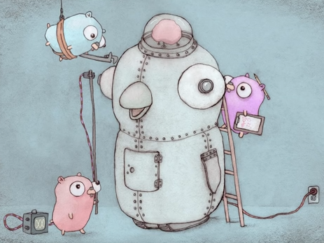

Title
Gopherbot
DevOps Chatbot

By David Parsley, parsley@linuxjedi.org
Gophers + Robot by Renee French (cropped) licensed under Creative Commons License 3.0
Status
Gopherbot is in the middle of the v3 transition. The important point for users is that the current engine behavior is real and usable now, even though some long-tail features and connectors are still evolving.
The docs in this book were reorganized in March 2026 around the workflow the project actually supports today:
- develop and run the engine locally on a Linux workstation
- keep robot configuration in git
- prefer built-in interpreters and current v3 config structure
- deploy the same robot cleanly to long-running environments
What is current
- The startup and configuration model documented here matches the current v3 engine defaults and robot skeleton.
- The SSH connector is the default local-development connector.
- Slack remains the primary production team-chat connector.
- Multi-protocol runtime support,
PrimaryProtocol,SecondaryProtocols, and username-authoritative identity are part of the current model. BasicMarkdownis the default outgoing message format unless you set another one explicitly.
What is still moving
- Some included plugins and older integrations are still catching up to v3 expectations.
- Connector coverage is still uneven across platforms; this manual focuses on what is supported and maintained today.
- The engine still evolves faster than the user manual at times, so the shipped defaults and example repositories remain useful companion references.
How to read this book
If you are new to Gopherbot, start with Part I and build a local robot first.
If you already run older robots, jump to Configuration Reference and Upgrading Existing Robots.
If you are writing automation, Part III is the modern starting point after you are comfortable with the local workflow.
Foreword
My work with ChatOps began with Hubot around 2012 when I was working as an systems engineer for a small hosting provider. The owner had sent me a link to Hubot, asking me to have a look. I took to the concept immediately, and started automating all kinds of tasks that our support team could easily access from our team chat. Soon they were using our robot to troubleshoot email routing and DNS issues, migrate mailboxes, and build new cPanel server instances.
Not being a very talented (or motivated) Javascript/NodeJS programmer, my Hubot commands invariably followed the same pattern: write it in Javascript if it was trivially easy to do so, otherwise shell out to bash and return the results. This was productive and gave results, but it was ugly and limited in functionality.
When I began teaching myself Go, I needed a good project to learn with. After my experience with Hubot, I decided to write a robot that was more approachable for Systems and DevOps engineers like myself - tasked with providing functionality most easily accessible from e.g. bash or python scripts. Towards that end, Gopherbot’s design:
- Is CGI-like in operation: the compiled server process spawns scripts which can then use a simple API for interacting with the user / chat service
- Supports any number of scripting languages by using a simple json-over-http localhost interface
- Uses a multi-process design with method calls that block
Ultimately, Gopherbot gives me a strong alternative to writing Yet Another Web Application to deliver some kind of reporting, security, or management functionality to managers and technical users. It’s a good meet-in-the-middle solution that’s nearly as easy to use as a web application, with some added benefits:
- The chat application gives you a single pane of glass for access to a wide range of functionality
- The shared-view nature of channels gives an added measure of security thanks to visibility, and also a simple means of training users to interact with a given application
- Like a CGI, applications can focus on functionality, with security and access control being configured in the server process
It is my hope that this design will appeal to other engineers like myself, and that somewhere, somebody will exclaim “Wait, what? I can write chat bot plugins in BASH?!?”
David Parsley, March 2017 / September 2019
#!/bin/bash
# echo.sh - trivial shell plugin example for Gopherbot
# START Boilerplate
[ -z "$GOPHER_INSTALLDIR" ] && { echo "GOPHER_INSTALLDIR not set" >&2; exit 1; }
source $GOPHER_INSTALLDIR/lib/gopherbot_v1.sh
command=$1
shift
# END Boilerplate
configure(){
cat <<"EOF"
---
Commands:
- Command: "repeat"
Regex: '(?i:repeat( me)?)'
Usage: "repeat (me)"
Summary: "prompt for and trivially repeat a phrase"
Examples:
- "(bot) repeat me"
Keywords: [ "repeat" ]
EOF
}
case "$command" in
# NOTE: only "configure" should print anything to stdout
"configure")
configure
;;
"repeat")
REPEAT=$(PromptForReply SimpleString "What do you want me to repeat?")
RETVAL=$?
if [ $RETVAL -ne $GBRET_Ok ]
then
Reply "Sorry, I had a problem getting your reply: $RETVAL"
else
Reply "$REPEAT"
fi
;;
esac
Introduction
Gopherbot DevOps Chatbot is a tool for teams of developers, operators, infrastructure engineers and support personnel - primarily for those that are already using Slack or another team chat platform for day-to-day communication. It belongs to and integrates well with a larger family of tools including Ansible, git and ssh, and is able to perform many tasks similar to Jenkins or TravisCI; all of this functionality is made available to your team via the chat platform you’re already using.
To help give you an idea of the kinds of tasks you can accomplish, here are a few of the things my teams have done with Gopherbot over the years:
- Generating and destroying AWS instances on demand
- Running software build, test and deploy pipelines, triggered by git service integration with team chat
- Updating service status on the department website
- Allowing support personnel to search and query user attributes
- Running scheduled backups to gather artifacts over
sshand publish them to an artifact service - Occasionally generating silly memes
The primary strengths of Gopherbot stem from its simplicity and flexibility. In v3, the preferred workflow is to run the engine directly on a Linux workstation while you build and test your robot locally, then deploy that same robot where it belongs later. Gopherbot still bootstraps cleanly onto servers and containers, but local development is now the default story rather than a special case.
Simple command plugins can still be written in bash, python or ruby, but v3 leans much harder on built-in interpreters and Go-based extensions so robots depend on fewer external tools. Like any user, the robot can also have its own encrypted ssh key for performing remote work and interfacing with git services.
The philosophy underlying Gopherbot is the idea of solving the most problems with the smallest set of general purpose tools, accomplishing a wide variety of tasks reasonably well. The interface is much closer to a CLI than a web GUI, but it’s remarkable what can be accomplished with a shared CLI for your team’s infrastructure.
The major design goals for Gopherbot are reliability and portability, leaning heavily on “configuration as code”. Ideally, custom add-on plugins and jobs that work for a robot instance in Slack should work just as well if your team moves, say, to Rocket.Chat. This goal ends up being a trade-off with supporting specialized features of a given platform, though the Gopherbot API enables platform-specific customizations if desired.
Secondary but important design goals are configurability and security. Individual commands can be constrained to a subset of channels and/or users, require external authorization or elevation plugins, and administrators can customize help and command matching patterns for stock plugins. Gopherbot has been built with security considerations in mind from the start, employing strong encryption, privilege separation, and a host of other measures to make your robot a difficult target for potential attackers.
Modern Gopherbot still assumes that serious robots keep configuration in git, and this manual continues to focus on that model. The big difference is that the day-to-day authoring loop now starts on your workstation: run the engine locally, edit the robot repo locally, reload quickly, and only then hand that robot off to a server, VM, or container.
That’s it for the “marketing” portion of this manual - by now you should have an idea whether Gopherbot would be a good addition to your DevOps tool set.
Terminology
This section is the vocabulary for the rest of the manual.
- Gopherbot: the engine installation or source tree that contains the binary, built-in defaults, libraries, stock plugins, and robot skeleton.
- robot: a configured running instance of Gopherbot for one team or one purpose.
- Robot: the API object passed to plugin, job, and task handlers.
- install tree: the directory that contains the
gopherbotexecutable plus shippedconf/,lib/,resources/,plugins/,jobs/,tasks/, androbot.skel/. - robot home: the working directory where you launch the engine for one robot. In practice this is the directory that may contain
.env,.setup-state,workspace/, andcustom/. - custom config: the robot-specific overlay under
custom/. Installed defaults load first, thencustom/conf/...overrides them. - default robot: the built-in demo robot you get when no custom repository or custom config has been loaded yet. By default this robot is named
floyd. - bootstrap: the startup path where Gopherbot has enough environment to know which robot repository it should clone, but does not have the robot’s config on disk yet.
- plugin: interactive automation triggered by chat messages.
- job: scheduled or triggered automation that usually assembles a pipeline of tasks.
- task: a reusable unit of work inside a pipeline. Some tasks are stock and included with the engine; others are custom.
- pipeline: the ordered execution chain built by a plugin or job.
- primary protocol: the connector that provides the robot’s main runtime identity and default message context.
- secondary protocol: any additional connector enabled alongside the primary one.
- UserRoster: the global user directory for the robot. Identity and authorization decisions are username-based.
- ProtocolConfig: the connector-local configuration block loaded from
conf/protocols/<protocol>.yaml. - BasicMarkdown: the default cross-protocol outgoing message format in v3.
- parameter: a name/value setting attached to a task, plugin, job, or namespace. Secure parameters may need to be retrieved through the Robot API instead of plain environment variables.
- namespace: a reusable group of parameters shared across related automation.
- environment file:
.envorprivate/environment, loaded early at startup. This is where deployment-specific settings such asGOPHER_ENVIRONMENT,GOPHER_CUSTOM_REPOSITORY, or secrets usually live.
You will also see these names throughout the docs:
- Floyd: the name of the shipped default robot.
- Clu: the long-running development robot used while building v3.
- robot.skel: the standard starting point for a new robot repository.
Build and Install
The v3 installation story is simple:
- Install the engine once on a Linux machine you control.
- Create one or more robot working directories.
- Run the engine from those directories while you develop locally.
- When the robot is ready, deploy the same robot configuration to a VM, server, or container.
Two supported ways to install the engine
- Build from source and keep the checkout intact.
- Unpack a release archive into a stable install location such as
/opt/gopherbot.
In both cases, the gopherbot binary expects the rest of the install tree to be nearby. Treat the installation as a directory tree, not as a single standalone executable.
Recommended layout
- Engine install tree:
/opt/gopherbotor a source checkout you build in place - Robot home: one directory per robot, for example
/srv/robots/acmeor~/robots/acme
You run the binary from the install tree while your current working directory is the robot home. That gives the engine access to both worlds:
- installed defaults from the engine tree
- writable custom config from the robot home
Continue with Requirements if you are starting fresh, or skip ahead to Create Your First Robot if you already have a working install.
Requirements
Runtime requirements
- Linux. Gopherbot is developed and tested as a Linux-first tool.
- A shell account where you can run long-lived processes and keep a working directory for each robot.
gitandsshif you want bootstrap, update, or repository handoff workflows.- A team-chat platform or local connector setup appropriate for your robot.
Build requirements
If you are building from source instead of using a release archive:
- Go 1.24 or newer
make- standard build utilities such as
tarandgzipif you want packaged archives
What you do not need for the default v3 workflow
- A dev container just to write plugins
- An extra wrapper script just to start a development robot
- External interpreters for every language up front
You can still use Bash, Python, or Ruby extensions, but the modern path is to start with the built-in interpreters and Go support already included in the engine.
Build from Source
If you want the latest engine changes, build Gopherbot from a source checkout and keep that checkout as your install tree.
Build steps
git clone https://github.com/lnxjedi/gopherbot.git
cd gopherbot
make gopherbot
That leaves you with a gopherbot binary in the repository root.
Important detail
Do not copy just the binary somewhere else and throw the checkout away. The executable looks for shipped defaults and resources relative to its own location. A working source-based install tree includes at least:
gopherbotconf/lib/resources/plugins/jobs/tasks/robot.skel/
Typical source-based workflow
git clone https://github.com/lnxjedi/gopherbot.git ~/src/gopherbot
cd ~/src/gopherbot
make gopherbot
mkdir -p ~/robots/acme
cd ~/robots/acme
~/src/gopherbot/gopherbot
In that example:
~/src/gopherbotis the engine install tree~/robots/acmeis the robot home
That split is the normal v3 authoring workflow.
Install the Engine
If you prefer a cleaner separation between the engine and your robot homes, unpack a release archive into a stable location such as /opt/gopherbot.
Suggested layout
/opt/gopherbot/
gopherbot
conf/
lib/
resources/
plugins/
jobs/
tasks/
robot.skel/
Running a robot from that install
Create a robot home somewhere writable:
mkdir -p ~/robots/acme
cd ~/robots/acme
/opt/gopherbot/gopherbot
That command uses:
- the install tree at
/opt/gopherbotfor built-in assets - the current directory for writable robot state and
custom/
Sample SSH key for the default robot
The shipped default robot includes sample SSH users and keys so you can connect locally without doing any setup first. For the alice demo user:
chmod 600 /opt/gopherbot/resources/ssh-default/alice.key
ssh -i /opt/gopherbot/resources/ssh-default/alice.key -p 4221 alice@localhost
That is the fastest way to kick the tires on a fresh install.
Create Your First Robot
The easiest way to understand Gopherbot is to treat the engine and the robot as two separate things:
- the engine is installed once
- a robot is a working directory plus git-managed custom config
In v3, you should usually build the engine once, create a fresh robot home, run the default robot locally, and let the onboarding flow scaffold custom/ for you.
Recommended first run
mkdir -p ~/robots/acme
cd ~/robots/acme
/opt/gopherbot/gopherbot
If you built from source instead of installing under /opt/gopherbot, use the path to that build tree’s gopherbot binary instead.
On first run, no robot-specific config exists yet, so Gopherbot starts the default robot. By default it listens on the local SSH connector at localhost:4221.
From another terminal:
ssh -i /opt/gopherbot/resources/ssh-default/alice.key -p 4221 alice@localhost
Once connected:
- run
help - run
info - start the onboarding flow with
;new robot
The new robot flow scaffolds a custom/ tree, captures your initial SSH identity, and can later help with repository handoff so the robot is ready to bootstrap elsewhere.
The next few pages walk through that workflow in more detail.
Local Workstation Workflow
This is the workflow the v3 docs assume:
- Keep one engine install tree on your workstation.
- Keep one working directory per robot.
- Run the engine locally from the robot’s working directory.
- Edit the robot’s
custom/files directly. - Use
reloadto tighten the edit-test loop.
Why this workflow works well
Gopherbot is moving toward using its built-in interpreters and internal helpers more aggressively. That makes local authoring much smoother:
- fewer external runtime dependencies
- fast reload cycles
- easier debugging of config and scripts
- less friction for DevOps engineers who already live in a shell and editor
A good minimum setup
- one shell running the engine from the robot home
- one shell or editor for changing files under
custom/ - one local SSH session into the robot for interactive testing
That gives you a tight loop without adding extra orchestration around the engine itself.
Run the Default Robot
When you start Gopherbot in an empty robot home, it does not fail. It starts the shipped default robot instead.
That default is meant to be useful, not just decorative:
- it starts the local SSH connector by default
- it includes built-in help and admin commands
- it can scaffold a new robot with
new robot
Start it
mkdir -p ~/robots/demo
cd ~/robots/demo
/opt/gopherbot/gopherbot
Connect to it
chmod 600 /opt/gopherbot/resources/ssh-default/alice.key
ssh -i /opt/gopherbot/resources/ssh-default/alice.key -p 4221 alice@localhost
First commands to try
helpcommandsinfowhoami;new thread;new robot
What happens next
Until a real robot repository is configured, you are talking to the default robot named floyd. Once custom/ exists and your robot is configured, that local working directory becomes the robot.
If you stop in the middle of onboarding, the engine keeps state in .setup-state and the new robot resume and new robot repo commands pick up where you left off.
Robot Repository Layout
The robot’s writable home directory is where you launch the engine. The important subdirectory inside it is usually custom/.
Typical robot home
acme-bot/
.env
.setup-state
custom/
conf/
robot.yaml
environments/
protocols/
brains/
history/
plugins/
jobs/
plugins/
jobs/
tasks/
lib/
workspace/
What lives where
.env: deployment-specific environment variables and secretscustom/conf/robot.yaml: robot-wide policy and environment include pointcustom/conf/environments/*.yaml: environment-specific runtime defaultscustom/conf/protocols/*.yaml: connector-localProtocolConfigcustom/conf/brains/*.yaml: selected brain provider settingscustom/conf/history/*.yaml: selected history provider settingscustom/conf/plugins/*.yaml: plugin matchers, help, and local configcustom/conf/jobs/*.yaml: job schedules and local job configcustom/plugins/,custom/jobs/,custom/tasks/: your automation codecustom/lib/: shared helper code for external languagesworkspace/: working files generated by jobs or tasks
Installed defaults versus custom files
Gopherbot always loads installed defaults first and then overlays your custom files on top. That means your custom robot should usually contain only the local delta:
- enable or disable shipped features
- provide secrets and parameters
- add new plugins, jobs, or tasks
- intentionally override behavior
Avoid copying the engine’s whole default config into custom/ unless you truly want to fork that behavior.
Connector Credentials
Connector credentials belong in connector-local files under custom/conf/protocols/.
That is a deliberate v3 design choice:
- global robot policy stays in
custom/conf/robot.yaml - connector identity and transport details stay in each connector’s
ProtocolConfig
Local development
For local development you often need no third-party credentials at all. The SSH connector is the default local-development connector, and the default robot ships with sample SSH users and keys so you can get started immediately.
Production connectors
Today the most common production setup is:
- SSH for local development and recovery access
- Slack as the primary team-chat connector
Credential handling rules
- Keep secrets encrypted in config when possible with
{{ decrypt "..." }}. - Keep deployment-specific values in
.envwhen they are environment-dependent. - Keep connector user mappings inside the connector config, not in top-level robot config.
The Slack page on the next step shows the current Socket Mode shape.
Slack Socket Mode
Slack is configured in custom/conf/protocols/slack.yaml.
Minimal shape:
ProtocolConfig:
AppToken: xapp-{{ decrypt "<slack-app-token>" }}
BotToken: xoxb-{{ decrypt "<slack-bot-token>" }}
HearSelf: false
UserMap:
alice: U12345678
Notes
UserMapis connector-local in v3. It does not belong inrobot.yaml.- The engine still makes authorization decisions by canonical username, not by Slack user ID.
- Slash commands arrive as hidden bot-addressed messages, so hidden commands still have to be explicitly allowed by the plugin.
If Slack is your primary protocol, set it in custom/conf/environments/<environment>.yaml or directly in custom/conf/robot.yaml, depending on how you structure your environments.
Run and Deploy Your Robot
The same robot can move cleanly through these stages:
- local workstation development
- shared team development or review
- long-running deployment on a server, VM, or container
The big v3 improvement is that you do not need a special container-only development environment to get there.
Local runs
For day-to-day development, launch the engine from the robot home and keep editing custom/:
cd ~/robots/acme
/opt/gopherbot/gopherbot
Long-running deployments
For long-lived robots, the most common approaches are:
systemdon a VM or server- a container in Kubernetes or another orchestrator
In those environments the robot typically boots from:
- a checked-out robot home already on disk, or
GOPHER_CUSTOM_REPOSITORYplusGOPHER_DEPLOY_KEYso the engine can bootstrap itself
Use the next pages for the concrete deployment knobs.
Deployment Environment Variables
These are the environment variables you are most likely to care about when moving a robot between local development and deployment.
Usually required in deployed environments
GOPHER_ENCRYPTION_KEY- Unlocks encrypted config values and encrypted robot keys.
GOPHER_CUSTOM_REPOSITORY- The git URL for the robot repository when bootstrapping from an empty directory.
GOPHER_DEPLOY_KEY- A deploy key the robot can use to clone
GOPHER_CUSTOM_REPOSITORY.
- A deploy key the robot can use to clone
Commonly useful
GOPHER_ENVIRONMENT- Selects
custom/conf/environments/<environment>.yaml. - Defaults to
developmentfor scaffolded robots when not set.
- Selects
GOPHER_CUSTOM_BRANCH- Overrides the branch used for custom config checkout and update flows.
GOPHER_SSH_PORT- Overrides the SSH connector listen port.
GOPHER_LOGDEST- Overrides the log destination, for example
stdoutorrobot.log.
- Overrides the log destination, for example
GOPHER_LOGLEVEL- Sets the runtime log level.
GOPHER_MESSAGE_FORMAT- Overrides the default outgoing format. If unset, v3 defaults to
BasicMarkdown.
- Overrides the default outgoing format. If unset, v3 defaults to
Variables that matter mostly during local development
GOPHER_ENVIRONMENT=development- Explicitly pins the development environment if you maintain several.
GOPHER_SSH_PORT- Helpful when you run more than one local robot.
GOPHER_DEFAULT_PROTOCOL- Useful only for special multi-protocol routing cases.
Practical advice
- Keep
.envmode-restricted and out of casual reach. - Prefer putting deployment-specific values in
.envand stable robot behavior incustom/conf/. - Do not depend on old top-level
GOPHER_PROTOCOLhabits as your main environment selector; v3 expectsGOPHER_ENVIRONMENTto drive environment-specific config.
Run with systemd
systemd is the easiest long-running deployment target for most Linux robots.
Recommended shape
- Install the engine in a stable location such as
/opt/gopherbot. - Create a dedicated robot home such as
/srv/robots/acme. - Create a dedicated Unix user for that robot.
- Put the robot’s
.envin the robot home with restrictive permissions. - Copy and adapt
resources/robot.serviceorresources/user-robot.service.
Minimal service pattern
[Service]
Type=simple
WorkingDirectory=/srv/robots/acme
ExecStart=/opt/gopherbot/gopherbot -plainlog
Restart=on-failure
TimeoutStopSec=600
Notes
- Keep the engine install tree and the robot home separate.
- The robot home should be writable by the robot user.
TimeoutStopSec=600is intentional; Gopherbot tries to finish in-flight pipelines during graceful shutdown.- Prefer configuring protocol and behavior in
custom/conf/and.envinstead of stuffing everything intoEnvironment=lines.
Bring it up
sudo systemctl daemon-reload
sudo systemctl enable acme-bot
sudo systemctl start acme-bot
sudo systemctl status acme-bot
Container Deployment
Containers are a valid deployment target for Gopherbot.
Good use cases
- you already operate Kubernetes or another container platform
- you want immutable engine images and environment-driven robot bootstrap
- your team already manages secrets and restart policy through an orchestrator
What to keep in mind
- Build and test the robot locally first.
- Treat the container as a deployment wrapper around the same robot, not as a separate authoring environment.
- Provide the same critical environment values you would keep in
.envon a VM. - Avoid running multiple production instances of the same robot unless you have explicitly designed for that.
Typical bootstrap model
An empty working directory inside the container is fine as long as you provide:
GOPHER_ENCRYPTION_KEYGOPHER_CUSTOM_REPOSITORYGOPHER_DEPLOY_KEY- any environment selector or connector overrides your robot depends on
On startup, Gopherbot will clone the robot repo, load config, and continue as a normal robot.
Docker Example
A minimal container run looks like this:
docker container run --name acme-bot \
--restart unless-stopped \
--env-file .env \
-e HOSTNAME="$(hostname)" \
ghcr.io/lnxjedi/gopherbot:latest
Notes
- Build and validate the robot locally before you do this.
- Keep
.envout of image layers and source control. - If your robot needs extra operating-system tools, build a derived image that adds them.
podmanworks fine for the same pattern.
Kubernetes Example
Kubernetes is a good fit when:
- your team already deploys operational tooling in-cluster
- you want secrets and restart behavior managed by the platform
- the robot’s external dependencies fit cleanly into a container image
The repository ships an example manifest at resources/deploy-gopherbot.yaml and Helm material under resources/helm-gopherbot/.
Minimum checklist
- store the robot’s environment values as a Kubernetes secret
- mount or inject those values into the container
- run only one production instance for a given robot unless you have planned for coordination
- ship any extra system dependencies in the image instead of assuming they exist in the cluster
Daily Usage
Gopherbot listens the way a teammate does: it sees messages coming from users, channels, threads, and direct-message contexts, then routes them through command, ambient-message, and job-trigger logic.
In practice, most users mainly need to know four things:
- how to address the robot
- where a command is available
- how to discover commands with help
- how threads and direct messages affect replies
This section covers those user-facing behaviors rather than the internal implementation details.
Addressing the Robot
Every robot has both:
- a regular name, such as
floyd - a one-character alias, such as
;
Both are valid ways to address a command.
Common patterns
;ping
floyd, ping
floyd: ping
ping, floyd
ping is the canonical first command because it is usually available everywhere the robot is present.
A useful routing nuance
If you send what looks like a command but forget to address the robot, many connectors support the follow-up pattern of sending just the bot name or alias as your next message. That tells the robot to interpret the previous message as if it had been addressed.
Hidden commands
Some connectors support hidden messages, such as Slack slash commands or SSH hidden messages. Hidden messages are not a free bypass:
- the command still has to be explicitly allowed as hidden by the plugin
- the message still has to be treated as addressed to the robot
Command Matching
Gopherbot commands are matched by regular expressions, not fuzzy AI intent matching. That is a strength: the behavior is predictable, testable, and safe for automation.
Most normal directed commands are authored with SimpleMatcher, a small command grammar for words, choices, typed captures, and CLI-style dash options. Plugin authors should use the SimpleMatcher reference for the full syntax and argument-passing rules.
What happens when a command does not match
When you address the robot directly but no command matches, the robot usually replies with a message that points you back to help.
That failure can mean one of three things:
- you mistyped the command
- the command exists but is not available in the current channel or DM context
- the command is not visible to you because of policy or authorization
v3 quality-of-life behavior
If a command is clearly valid somewhere else, the engine can often tell you that it belongs in another channel or in DM. That happens before generic catch-all behavior, so users get a more useful answer than a plain “no command matched”.
Best next step
Use help <keyword> instead of guessing. The help system understands command metadata and current visibility better than trial and error.
Channels, DMs, and Threads
Availability is a first-class part of Gopherbot command design.
Channels
Many commands are intentionally limited to specific channels. That is normal for operational robots. For example:
- build or deploy commands may only belong in a job channel
- support commands may only belong in a support channel
- noisy or playful commands may be kept out of primary work channels
Direct messages
Some commands are better in DM, especially when they:
- prompt for follow-up input
- reveal sensitive data
- would create too much channel noise
Threads
Threads matter in Gopherbot. The engine tracks thread context and many plugins use it to keep long workflows contained. On connectors that support threads well, replying in-thread is usually the cleanest way to run multi-step operations.
Practical takeaway
If a command works somewhere else but not here, it is often a channel-placement issue rather than a typo. Use help <keyword> or commands in the current context to see what is actually available.
Finding Commands with Help
The built-in help plugin is the fastest way to discover what a robot can do in your current context.
Most useful commands
helphelp <keyword>commandshelp-allinfo
What makes v3 help better
Help in v3 is tied more closely to command metadata:
UsageSummaryExamplesKeywords
That means users see help that is closer to the actual command surface rather than a detached block of prose.
Context-aware behavior
Help is filtered by the current channel or DM context, and where possible by what the user should actually be allowed to see. If a command exists somewhere else, help can point you there instead of pretending the command does not exist.
Advice for users
- Use
commandswhen you want to browse. - Use
help <keyword>when you know roughly what you want. - Use
infowhen you need operational details about the robot itself.
Built-in Commands
Every robot ships with a small set of foundational commands, and many robots also keep some stock plugins enabled.
Core commands most users will see
ping: check that the robot is listeninghelp,commands,help-all: discover commandsinfo: inspect runtime and admin-facing basicswhoami: see how the robot identifies you
Commonly enabled stock plugins
links: store and search shared bookmarkslists: keep simple shared lists- onboarding helpers on the default robot, such as
new robot
Why these matter
These commands are more than demos:
infohelps confirm which robot, branch, and environment you are talking towhoamihelps debug identity mapping andUserRosterissueslinksandlistsare small but real examples of persistent memory usage
Message Context
Gopherbot keeps track of more than just message text. Context can include:
- the user
- the protocol
- the channel
- the thread
- labeled values captured by command matchers
That context is what lets plugins do useful follow-up behavior without inventing their own ad-hoc state machine for every conversation.
Examples
- prompting a user and waiting for the reply in the same channel or thread
- remembering the current list name or item in a short workflow
- continuing a threaded conversation without polluting the main channel
Context is intentionally scoped. In v3, thread-scoped memory includes protocol context so different connectors do not collide with each other.
Administration and Day 2 Operations
Once a robot is in use, most operational work falls into a short list:
- update config from git
- reload the running robot
- inspect active protocols and branches
- pause or resume jobs
- inspect logs when something goes wrong
The sections below focus on those recurring tasks rather than one-time setup.
Updating and Reloading
There are three related admin actions you will use a lot:
reloadupdateswitch-branch <branch>ordefault-branch
reload
Use reload when you have already changed files on disk and want the running robot to re-read configuration.
update
Use update when the running robot should git pull its custom repository and then reload.
This is the common production flow:
- make and test changes locally
- commit and push them
- tell the production robot to
update
Branch-aware workflows
switch-branch <branch> and default-branch are useful when you want a fast test-and-rollback cycle on a live robot without manually logging into the host and editing its checkout.
Good habit
Prefer testing significant changes on a local robot first. update is great for safe rollouts, not for discovering syntax mistakes in front of your whole team.
Administrative Commands
The built-in admin plugin provides the core operational command set.
Most important commands
reloadupdateswitch-branch <branch>default-branchgit-infoprotocol-listprotocol-start <name>protocol-stop <name>protocol-restart <name>pskill-pipeline <wid>pause-job <job>resume-job <job>paused-jobsquitrestartabort
What these tell you
- branch commands answer “what config am I running?”
- protocol commands answer “which connectors are up right now?”
- process commands answer “what work is currently in flight?”
These commands are intentionally admin-only. They are part of the day-2 operational surface, not the normal user command set.
Logging
Gopherbot logs can go to:
stdoutstderr- a log file such as
robot.log
Recommended defaults
- local development:
stdoutis usually fine unless the connector needs a clean terminal - terminal-style local interaction: let the connector move logs to
robot.logwhen needed - production under
systemd: plain logs to stdout/stderr are usually easiest to collect
Useful debug knobs
GOPHER_LOGLEVELGOPHER_LOGDESTGOPHER_HTTP_DEBUG
Be careful with GOPHER_HTTP_DEBUG; it is for low-level troubleshooting and may expose sensitive request or response data.
General Concepts
Since Gopherbot is designed for ChatOps with the idea of being an ‘Enterprise Sudo’, it is important to discuss security-related issues. It is expected that as team chat services and therefore ChatOps becomes more prevalent in mainstream IT, understanding of ChatOps security issues will improve and mature. Laid out here are a few general considerations along with some of Gopherbot’s specific security-related features.
Plugin (non-)Separation
Gopherbot’s design is intended to allow eventual support for a strong separation between external plugins, so that e.g. internally developed plugins can (more) safely coexist with 3rd-party external plugins. This is not yet fully implemented, however the API design should accommodate it. Currently the robot and all external plugins run as the robot user; mainly this means that all external plugins can read whatever files the main gopherbot process can read, including the file-based brain.
Trusted (internally-developed) and Untrusted (third party) Plugins
Gopherbot is designed with an eye towards future proliferation of third party plugins - from managing cloud provider infrastructure, to ordering pizza, to generating memes or spitting out random facts about cats and Chuck Norris. Currently there are only a small number of plugins available, but it’s still important to discuss and consider these aspects of ChatOps security.
When running Gopherbot for doing real, privileged, security-sensitive work, best practices would dictate:
- Never run both trusted and untrusted plugins in the same instance of Gopherbot
- Never invite a bot running untrusted plugins into a channel where a bot with trusted plugins is running
The reasoning here is that plugins have the ability to listen and respond to everything said, and a user might not always be certain of what plugin they’re interacting with. That being said, many plugins (such as weather) are very short and easy to read/audit for malicious code.
Communication between robots
Visibility
Each plugin can specify one or more of Users, Channels, AllChannels, RequireAdmin, AllowDirect and DirectOnly that will limit who a plugin is visible to, and whether it can be accessed in a given channel or via direct message. For instance, you could allow certain security-sensitive plugins to be visible only in a few invite-only private channels. Note that if a given plugin is available to a user only in certain channels, help <keyword> will list the channels where a plugin is available.
Additionally, being able to restrict based on channels means that potentially security-sensitive operations will always be performed in the view of other members of the team, adding another level of protection.
Authorization
If a plugin is available to the user, the robot will then check authorization, if configured. Instead of creating a pluggable interface for e.g. group membership, or other authorization primitives, Gopherbot uses the notion of an “Authorizer” plugin that gets called with the command authorize, and these arguments:
the name of the plugin being authorized, an optional group/role name, followed by the command and any arguments to the command. The plugin can perform look-ups or optionally interact with the user, and is expected to exit with bot.Success if the user is authorized, bot.Fail if the user isn’t authorized, or bot.MechanismFail / bot.ConfigurationError if e.g. LDAP or some other central service couldn’t be reached or is misconfigured. Note that the libraries define constants for these values.
Authorization is useful for all kinds of cases where a given plugin may be available in several channels, but uses different resources based on the channel and simply limiting visibility isn’t sufficient. It’s also useful for implementing e.g. group security. The main upside is that it gives the bot administrator the ability to implement arbitrary logic for determining authorization, but that’s also the main downside - it may require scripting to configure certain types of authorization.
Elevation
Finally, if the user passes the authorization check, the robot will then check for elevation if a given command is listed in ElevatedCommands or ElevateImmediateCommands. Elevation behaves similarly to sudo, in that the user may be required to supply a second form of authentication (mfa / 2fa) before an action is allowed. Individual elevation plugins may be configurable with a timeout for ElevatedCommands, such that a user can continue to perform elevated operations for a period of time before re-authentication is required. As the name suggests, ElevateImmediateCommands will always require mfa, and should therefore be used sparingly, especially if the mfa method is onerous (e.g. totp).
Some elevators use a human approval flow instead of personal MFA. The built-in builtin-userapproval elevator lets a configured approver approve or deny a sensitive command.
Hardened Design
Privilege Separation
Gopherbot 2.0 introduced the ability to use privilege separation where the robot executable is installed setuid, and run by the robot ‘user’. Thus, the main process will run as another user; in the Docker containers and Ansible role, this defaults to ‘bin’. The starting environment file .env should only be readable by this privileged user, as this is where the robot obtains e.g. it’s encryption key or Slack token. Externally executed plugin, job and task scripts (but not Go plugins) all run as the non-privileged user that started the process.
Encryption
Gopherbot 2.0 also adds AES-256 / GCM encryption at it’s core, which is required for storing secrets and parameters in the robot’s brain, and can optionally be used to fully encrypt the contents of the brain.
Memory Protection
Preliminary / incomplete has been added for storing the robot’s internal encryption key in protected memory. The current implementation provides minimal additional hardening, and needs further thought and development.
User Approval Elevation
builtin-userapproval is an elevation plugin for commands that should require a human approval step instead of a personal MFA challenge. It is useful when a sensitive action should be approved by another trusted operator, such as a deploy, account change, firewall update, or credential rotation.
Use it when the question is:
- “Is this action important enough that another person should approve it?”
Do not use it as a substitute for base authorization. Authorization still decides whether the requester is allowed to ask for the action. Elevation adds a second confirmation step after that authorization succeeds.
How the Flow Works
When a command requires elevation and uses builtin-userapproval:
- Gopherbot finds the effective approver list for the current plugin.
- In strict mode, the requester is removed from that list.
- The requester chooses one remaining approver from a short lettered menu.
- The selected approver receives a direct yes/no prompt.
- If the approver replies
yesory, the protected command runs.
If the selected approver replies no, does not reply before the prompt times out, or there are no eligible approvers, elevation fails and the protected command does not run.
Strict Mode
Strict mode prevents self-approval. It is enabled by default.
With strict mode enabled, this configuration:
Config:
FallbackApprovers: [ alice, bob ]
means:
- if
alicerequests elevation, onlybobcan approve - if
bobrequests elevation, onlyalicecan approve - if
aliceis the only listed approver, Alice cannot approve herself and elevation fails
This is the safest default for most production robots.
Non-Strict Mode
Non-strict mode allows a listed approver to approve their own elevation automatically. This can be useful for small teams, break-glass commands, personal robots, development environments, or actions where the approver list is being used as a lightweight operator allow-list.
To disable strict mode globally for this elevator:
Config:
DefaultStrict: false
FallbackApprovers: [ alice, bob ]
With that configuration, if alice requests an elevated command and alice is in the effective approver list, Gopherbot approves the elevation immediately.
If the requester is not in the effective approver list, the normal choose-an-approver flow still runs.
Configuration
Enable the elevator by setting it as the robot default:
DefaultElevator: builtin-userapproval
Then configure the built-in plugin in conf/plugins/builtin-userapproval.yaml:
ReplyMatchers:
- Label: approvalChoice
Regex: '[a-z]'
Config:
DefaultStrict: true
FallbackApprovers: [ david ]
PluginApprovers:
deploy:
Approvers: [ alice, bob, david ]
Strict: false
wireguard: [ alice, bob ]
FallbackApprovers is used when the current plugin is not listed under PluginApprovers.
PluginApprovers can use either form:
- list form:
wireguard: [ alice, bob ] - object form with a strict-mode override:
PluginApprovers:
deploy:
Approvers: [ alice, bob, david ]
Strict: false
The list form uses DefaultStrict. The object form can override strict mode for that plugin.
Protecting Commands
In the target plugin’s config, list the commands that require elevation:
ElevatedCommands:
- deploy
- rollback
Commands:
- Command: deploy
SimpleMatcher: "deploy <service:ident>"
- Command: rollback
SimpleMatcher: "rollback <service:ident>"
These are ordinary directed command matchers; see the SimpleMatcher reference for matcher syntax details.
If the robot has DefaultElevator: builtin-userapproval, those commands use user approval automatically.
To use this elevator for one plugin only, set Elevator in that plugin config:
Elevator: builtin-userapproval
ElevatedCommands:
- rotate-key
Choosing Approvers
Approvers are canonical Gopherbot usernames, not Slack IDs, email addresses, SSH usernames, or connector-local IDs. The connector maps transport identity to the canonical username before authorization and elevation run.
Use names from UserRoster and AdminUsers, such as:
UserRoster:
- UserName: alice
UserID: U123
- UserName: bob
UserID: U456
Approver names are normalized by trimming whitespace and lowercasing before comparison.
Operational Notes
Keep approver lists small and intentional. The requester sees a single-letter menu, and the implementation supports up to 26 eligible approvers.
Prefer strict mode for production operations where a second person should really be involved. Use non-strict mode only when self-approval is an intentional policy choice.
For commands that return sensitive data, combine elevation with private-command policy. User approval controls whether the command may run; it does not automatically move the response into a direct message.
Extending Your Robot
Gopherbot is most useful when your team adds its own automation. In v3, the recommended extension path is:
- start with the built-in interpreters or Go
- keep extension config in
custom/conf/ - keep extension code in
custom/plugins/,custom/jobs/, orcustom/tasks/ - test locally and reload often
Choose the right extension type
- plugin: a user-facing command or ambient matcher
- job: scheduled or triggered automation that assembles work
- task: a reusable unit of work inside pipelines
Language guidance
The current project preference is:
- Lua for approachable built-in scripting
- Go for safety and performance
- JavaScript where it fits well
Bash, Python, and Ruby are still supported, especially when they are the most practical fit for an existing integration.
Your First Plugin
For a first plugin in v3, use Lua. It gives you a fast local loop without requiring an external runtime.
1. Register the plugin in custom/conf/robot.yaml
ExternalPlugins:
"hello":
Description: Example hello-world plugin
Path: plugins/hello.lua
2. Add matcher and help metadata in custom/conf/plugins/hello.yaml
For ordinary directed commands, use SimpleMatcher. See the SimpleMatcher reference when you need captures, choices, options, or detailed matching rules.
Commands:
- Command: hello
SimpleMatcher: "hello"
Usage: "hello"
Summary: "reply with a friendly greeting"
Examples:
- "(alias) hello"
Keywords: [ "hello", "example" ]
3. Create custom/plugins/hello.lua
local gopherbot = require "gopherbot_v1"
local Robot = gopherbot.Robot
local task = gopherbot.task
local cmd = arg and arg[1] or ""
if cmd == "init" then
return task.Normal
end
if cmd == "hello" then
local bot = Robot:new()
bot:Reply("Hello from Lua")
return task.Normal
end
return task.Fail
4. Reload and test
;reload
;hello
Why this layout matters
- command metadata lives in config, not buried in code
- the plugin code stays small and focused
- help output stays aligned with the actual command surface
Configuration Style Guide
These conventions make robots easier to upgrade and easier for teammates to understand.
Prefer small custom deltas
Let the engine’s shipped defaults stay authoritative. In custom config, override only what your robot truly needs:
- enable or disable features
- add local parameters and secrets
- add local commands
- intentionally redefine behavior
Keep transport details local to connectors
Put connector-specific identity and credential data in custom/conf/protocols/<protocol>.yaml, not in top-level robot config.
Treat usernames as canonical
The engine’s security and policy decisions are username-based. Make connector mappings resolve to the same canonical usernames that exist in UserRoster.
Prefer environments over ad-hoc branching logic
Use custom/conf/environments/<environment>.yaml and GOPHER_ENVIRONMENT to express development, staging, and production differences cleanly.
Writing Good Help Text
Help in v3 is command-linked, so good help starts with good command metadata.
Most directed commands should use SimpleMatcher; see the SimpleMatcher reference for the full command grammar. Help text should show what users type, not every detail of the matcher grammar.
Recommended fields
Usage: the command body onlySummary: one short sentenceExamples: a few realistic examplesKeywords: the search terms users will actually try
Example
Commands:
- Command: deploy
SimpleMatcher: "deploy <branch:token>"
Usage: "deploy <branch>"
Summary: "deploy the named git branch to the selected environment"
Examples:
- "(alias) deploy main"
- "(alias) deploy release/2026-03-13"
Keywords: [ "deploy", "release", "ship" ]
Good habits
- Use placeholders in examples, not your real bot name.
- Keep
Usageshort and command-line-like. - Put the detailed explanation in follow-up help or normal prose, not inside
Usage. - If a command has a common invalid form, handle it deliberately and reply with the correct syntax.
Local Authoring Workflow
The normal v3 authoring loop looks like this:
- run the engine from the robot home
- connect over the local SSH connector
- edit files under
custom/ - issue
reload - test the command again
Example loop
cd ~/robots/acme
/opt/gopherbot/gopherbot
In another terminal:
ssh -i /opt/gopherbot/resources/ssh-default/alice.key -p 4221 alice@localhost
Then:
- edit
custom/conf/plugins/hello.yaml - edit
custom/plugins/hello.lua - run
;reload - run
;hello
That is the workflow the rest of this manual assumes.
CLI Tools for Authors
The gopherbot binary is also a CLI utility. The most useful commands for authors and operators are:
gopherbot --helpgopherbot checkgopherbot matchgopherbot encryptgopherbot decryptgopherbot validate <path>gopherbot dump installed <path>gopherbot dump configured <path>gopherbot listgopherbot fetch <key>gopherbot version
Examples
Encrypt a secret:
gopherbot encrypt MyLousyPassword
Validate a robot repository:
gopherbot validate ~/robots/acme/custom
Check one SimpleMatcher without loading a robot:
gopherbot check 'spot (type:rails|devops) up [<branch:token>]' spot-devops-up
Match command text against the configured robot’s plugin commands:
gopherbot match spot-devops-up
match uses the configured robot’s command metadata. If the robot encryption key is available, template secrets are decrypted normally; if it is not available, secret template values are replaced with redacted placeholders and a note is written to stderr.
For repeated tests, load the command metadata once and prompt for command text until EOF:
gopherbot match -interactive
Dump the final merged robot config:
gopherbot dump configured robot.yaml
Secret template values are redacted by default when dumping expanded config. Use --unredacted-secrets only when you deliberately want decrypted secret values printed:
gopherbot dump --unredacted-secrets configured plugins/example.yaml
These commands are especially useful when configuration reload fails and you want to understand what the engine thinks the world looks like.
Secrets and Parameters
Gopherbot gives you two main ways to supply sensitive values:
- encrypted values embedded in config with
{{ decrypt "..." }} - parameters passed to plugins, jobs, tasks, or namespaces
Encrypt a value
gopherbot encrypt foobarbaz
Then use the returned blob in config:
Parameters:
- Name: API_TOKEN
Value: {{ decrypt "<encrypted-value>" }}
Secure parameter handling
When SecureParameters: true is enabled, tasks may need to fetch secrets with GetParameter(...) instead of reading them directly from the process environment.
That is the safer v3 posture and the one new robots should expect.
Pipelines, Jobs, and Tasks
Pipelines are the execution model behind most non-trivial Gopherbot automation.
Whenever a plugin or job starts work, the engine manages up to three related stages:
- the primary stage for the main work
- the final stage for cleanup that should always run
- the fail stage for failure-specific handling
Mental model
- plugins are the interactive entry points
- jobs are scheduled or triggered entry points
- tasks are the reusable worker units inside those flows
The Robot API lets plugins and jobs build pipelines dynamically, which is why Gopherbot can express CI/CD-like behavior without forcing you into a giant static YAML pipeline language.
Primary Pipelines
The primary stage is where the real work happens.
Key behaviors
- tasks run in sequence
- a failure stops normal primary-stage execution
- plugins often begin as a single task and then add more work dynamically
- privileged tasks can only be added by a pipeline that is already privileged
Important API calls
AddTaskAddJobAddCommandSetParameterSetWorkingDirectory
v3 nuance
AddJobstarts a child pipelineAddCommandstays inside the current pipeline and is not a fake new inbound chat message- tasks added during execution can run before later originally queued tasks, which is how setup tasks can expand into more detailed work on the fly
Privilege and AddTask
Marking a task with Privileged: true does not make the pipeline privileged. It means the task requires a privileged pipeline. This is useful for reusable operations that depend on robot-owned credentials, such as a kubectl task that uses a robot-managed kubeconfig. A privileged job or plugin can add that task; an unprivileged plugin cannot.
Final Pipelines
Final tasks always run after the primary stage, whether the primary stage succeeded or failed.
Ordering
Final tasks run in reverse order of addition. Think of them as a cleanup stack.
That behavior is intentional because it lets you pair setup and teardown naturally:
- start an
ssh-agent - later stop that same agent in a final task
Good use cases
- cleanup
- closing sessions
- deleting temporary state
- sending a final summary after work is complete
Fail Pipelines
Fail tasks run only when the primary stage ends in failure.
Ordering
Unlike final tasks, fail tasks run in the order they were added.
Good use cases
- send an explicit failure notification
- gather debugging information
- alert another system
- leave breadcrumbs for an operator before cleanup runs
Task Environment
Every task sees a constructed environment, not the raw shell environment of the engine process.
Sources of task values
From lower priority to higher priority, values can come from:
- namespaces
- task, plugin, or job parameters
- pipeline parameters
SetParameter(...)during pipeline execution
Practical rules
- jobs seed pipeline parameters naturally
- plugins usually have to publish values into the pipeline explicitly with
SetParameter(...) - secure parameters may need to be read with
GetParameter(...)
The safe mental model is: tasks run with the environment the engine intentionally assembles for them, not whatever happened to be exported in the parent shell.
Included Tasks
Gopherbot ships with a small set of useful stock tasks. Common examples include:
send-messagerestart-robotrobot-quitpausepause-brainresume-brainrotate-logtail-logssh-agentssh-git-helpergit-commandemail-log
These tasks are useful both directly and as examples of how the pipeline model is meant to be used.
Configuration Reference
Gopherbot configuration is built from two layers:
- installed defaults from the engine
- custom overrides from your robot
The modern v3 layout is intentionally more structured than older versions:
custom/conf/robot.yamlfor robot-wide policycustom/conf/environments/for environment-specific defaultscustom/conf/protocols/for connector-local configcustom/conf/brains/andcustom/conf/history/for provider settingscustom/conf/plugins/andcustom/conf/jobs/for plugin and job metadata
This structure is the backbone of the v3 manual because it is also the backbone of the runtime.
Start with the robot.yaml reference when you need to know where a top-level option belongs or what a robot-wide setting does.
Configuration Overview
Gopherbot configuration is layered. The installed engine ships working defaults, and your robot repository supplies the small set of changes that make the robot yours.
The most important rule is:
robot.yamlselects robot-wide behavior and declares extensions- dedicated files hold detailed connector, provider, plugin, and job configuration
- custom files override shipped defaults
File Layout
For a custom robot, configuration normally lives under custom/conf/:
custom/conf/
robot.yaml
environments/
development.yaml
production.yaml
protocols/
ssh.yaml
slack.yaml
brains/
file.yaml
history/
file.yaml
queues/
gcloud.yaml
plugins/
hello.yaml
jobs/
nightly-report.yaml
variables/
common.yaml
production.yaml
What Goes Where
Robot-wide selectors and policy live in robot.yaml.
Examples:
PrimaryProtocolDefaultProtocolSecondaryProtocolsBrainHistoryProviderQueueProvidersDefaultMessageFormatAdminUsersUserRoster
See the robot.yaml reference for the full list of top-level options.
Detailed config lives in dedicated files:
- connector config:
conf/protocols/<protocol>.yaml - brain config:
conf/brains/<provider>.yaml - history config:
conf/history/<provider>.yaml - queue config:
conf/queues/<provider>.yaml - plugin config:
conf/plugins/<plugin>.yaml - job config:
conf/jobs/<job>.yaml
See the plugin config reference for conf/plugins/<plugin>.yaml.
This split keeps boundaries clean:
- transport concerns stay with connectors
- provider concerns stay with providers
- command and help metadata stays with the plugin that owns it
- robot-wide authorization and identity policy stays visible at the top level
Loading Order
Gopherbot loads most configuration in two layers:
- installed defaults from the engine tree
- custom overrides from the robot home
For example, when Gopherbot loads conf/plugins/ping.yaml, it first loads the installed conf/plugins/ping.yaml, then overlays custom/conf/plugins/ping.yaml when that custom file exists.
This same pattern applies to robot.yaml, protocols, providers, plugins, and jobs.
Merge Behavior
- maps merge recursively
- scalar values override
- arrays replace by default
- arrays append only when the custom key uses the
Append*prefix
That merge model is why some connector-local identity data uses lists instead of maps: lists replace cleanly, which prevents accidental inheritance of unwanted defaults.
Appending to Arrays
By default, a custom array replaces the shipped default array:
UserRoster:
- UserName: alice
Email: alice@example.com
If you want to append to an existing array instead, prefix the key with Append:
AppendUserRoster:
- UserName: bob
Email: bob@example.com
During merge, Gopherbot strips the Append prefix and appends the new array entries to the existing UserRoster.
This works for array-valued keys throughout the config tree, such as:
AppendUserRosterAppendAdminUsersAppendCommandsAppendAllowedPrivateCommandsAppendScheduledJobs
Use Append* deliberately. Replacing arrays is often safer for security-sensitive lists because it prevents accidentally inheriting default users, channels, commands, or provider entries.
Implementation detail that matters for troubleshooting: Append only changes merge behavior when the existing value and the new value are both arrays. For maps, nested maps merge recursively whether or not the key starts with Append; for scalar values, the custom value replaces the default.
Template Expansion
Config files are Go text templates before they are parsed as YAML. This applies to robot.yaml, included environment files, protocol files, provider files, plugin files, and job files.
See Config Templates for the helper reference, examples, and secret/variable guidance.
Example
{{ $environment := env "GOPHER_ENVIRONMENT" | default "development" }}
{{ printf "environments/%s.yaml" $environment | .Include }}
That is the standard v3 pattern for selecting environment-specific defaults in a scaffolded robot.
robot.yaml Reference
robot.yaml is the top-level configuration file for a robot. It chooses the robot’s global runtime behavior: which connectors start, which brain and history providers are used, who the robot knows about, who can administer it, and which plugins, jobs, tasks, namespaces, and parameter sets are available.
Most detailed configuration does not belong in robot.yaml. In v3, robot.yaml normally contains selectors and robot-wide policy, while detailed provider and extension settings live in dedicated files:
- connector settings:
conf/protocols/<protocol>.yaml - brain settings:
conf/brains/<provider>.yaml - history settings:
conf/history/<provider>.yaml - queue settings:
conf/queues/<provider>.yaml - plugin settings:
conf/plugins/<plugin>.yaml - job settings:
conf/jobs/<job>.yaml
For a custom robot, the file is usually custom/conf/robot.yaml inside the robot repository. Gopherbot first loads the installed defaults from the engine’s conf/robot.yaml, then merges the custom robot’s conf/robot.yaml over those defaults.
Quick Example
This is the shape of a small custom robot.yaml:
IgnoreUnlistedUsers: true
SecureParameters: true
{{ $environment := env "GOPHER_ENVIRONMENT" | default "production" }}
{{ printf "environments/%s.yaml" $environment | .Include }}
BotInfo:
UserName: floyd
Email: floyd@example.com
FullName: Floyd Gopherbot
FirstName: Floyd
LastName: Gopherbot
Alias: ";"
DefaultMessageFormat: BasicMarkdown
DefaultJobChannel: general
HistoryProvider: file
TimeOuts:
Plugin:
Warn: 7m
Kill: 14m
Job:
Warn: 1h
Kill: 2h
AdminUsers:
- alice
UserRoster:
- UserName: alice
Email: alice@example.com
FullName: Alice Admin
ScheduledJobs:
- Name: pause-notifies
Schedule: "0 0 8 * * *"
The included environment file commonly sets PrimaryProtocol, DefaultProtocol, Brain, and logging for a specific environment.
Loading and Merge Rules
Like other Gopherbot config files, robot.yaml is expanded as a template before it is parsed as YAML. See Config Templates for the common helper reference, include behavior, and secret/variable guidance.
See Configuration Overview for the full loading, merge, override, and Append* behavior.
Unknown top-level keys are startup errors. BrainConfig, HistoryConfig, and QueueConfig are also rejected in robot.yaml; put those in their dedicated provider files.
Protocols and Routing
PrimaryProtocol
Required.
PrimaryProtocol is the main connector protocol for the robot.
PrimaryProtocol: ssh
The engine normalizes protocol names by trimming whitespace and lowercasing them. The primary protocol must have a matching connector config file at conf/protocols/<protocol>.yaml, and that file must contain a ProtocolConfig section.
Common values include:
sshslackgooglechatterminaltestnullconn
The terminal connector is useful for local work, but it is not supported as a secondary protocol.
During reload, changing PrimaryProtocol is ignored once a connector runtime is already active. Restart the robot to change the primary protocol.
DefaultProtocol
Optional. Defaults to PrimaryProtocol.
DefaultProtocol is used when the robot sends an outbound message without an incoming message context, such as plugin initialization or scheduled work.
DefaultProtocol: ssh
If set, it must be either the primary protocol or one of SecondaryProtocols. If it is not, Gopherbot logs a warning and falls back to the primary protocol.
SecondaryProtocols
Optional.
SecondaryProtocols lists additional connector protocols to initialize and run alongside the primary protocol.
SecondaryProtocols:
- slack
- googlechat
Each secondary protocol should have conf/protocols/<protocol>.yaml. Secondary connector startup failures are logged, but they do not stop the primary connector from running.
Rules:
- duplicates are ignored
- the primary protocol is ignored if repeated here
terminalis ignored as a secondary protocol- protocol names are normalized internally
ChannelRoster
Optional.
ChannelRoster maps channel names to protocol channel IDs when a connector cannot provide a stable human-readable name, or when you want configuration to refer to a friendly channel name.
ChannelRoster:
- ChannelName: general
ChannelID: C123456
Fields:
ChannelName: name used in robot configChannelID: connector’s internal channel ID
Top-level ChannelRoster entries apply to the primary protocol. Protocol files can also provide ChannelRoster; those entries are tagged with that protocol as they load. Primary-protocol entries from robot.yaml are appended after the primary protocol file so robot-specific channel mappings can override protocol-specific lookup maps.
JoinChannels
Optional.
JoinChannels lists channels the robot should try to join during startup.
JoinChannels:
- general
- operations
Gopherbot also tries to join channels from DefaultChannels and DefaultJobChannel. Not every connector supports joining channels programmatically.
DefaultChannels
Optional.
DefaultChannels defines the channels where plugins are available when the plugin’s own config does not specify Channels and does not set AllChannels.
DefaultChannels:
- general
- random
Plugin-specific channel configuration belongs in conf/plugins/<plugin>.yaml.
Robot Identity and Addressing
BotInfo
Recommended.
BotInfo defines the robot’s canonical identity. Connectors receive this information during initialization, and plugin APIs use it for bot attributes.
BotInfo:
UserName: floyd
Email: floyd@example.com
FullName: Floyd Gopherbot
FirstName: Floyd
LastName: Gopherbot
Fields:
UserName: the name users type when addressing the robot, such asfloyd, pingEmail: used by email-sending APIs as the sender addressFullName: human-readable robot nameFirstName: optional first name attributeLastName: optional last name attribute
GetBotAttribute("name") returns BotInfo.UserName. GetBotAttribute("email") returns BotInfo.Email. GetBotAttribute("fullName") returns BotInfo.FullName.
Alias
Optional.
Alias is a one-character shortcut for addressing the robot.
Alias: ";"
With this example, users can say ;ping instead of floyd, ping.
Allowed alias characters are:
* + ^ $ ? \ [ ] { } & ! ; : - % # @ ~ < >
Only the first rune of the string is used. If the alias is invalid, startup fails.
HearSelf
Optional. Defaults to true.
HearSelf controls whether the engine processes messages that a connector marks as originating from the robot itself.
HearSelf: false
Connectors still own the decision to mark a message as a self-message. This option only controls whether the engine ignores those marked messages.
Users and Access Policy
UserRoster
Optional, but strongly recommended.
UserRoster is the global user directory. Gopherbot’s authorization and policy decisions are based on canonical usernames from this directory, not on connector-specific transport IDs.
UserRoster:
- UserName: alice
Email: alice@example.com
FullName: Alice Admin
FirstName: Alice
LastName: Admin
Phone: "+1-555-0100"
- UserName: buildbot
BotUser: true
Fields:
UserName: canonical username used in config, authorization, memory ownership, and policy checksEmail: user email returned by attribute APIsPhone: user phone returned by attribute APIsFullName: full display name returned by attribute APIsFirstName: first name returned by attribute APIsLastName: last name returned by attribute APIsBotUser: marks an automated user; bot users are not checked against ambient message matchers and do not fall through to catch-all pluginsUserID: legacy parse-only field; accepted so older configs can load, but ignored by the engine
UserName must be lowercase. Entries with an empty username or uppercase letters are ignored.
Connector-specific user IDs do not belong in top-level UserRoster. Put protocol-local identity mapping in the connector’s config file, such as conf/protocols/slack.yaml, conf/protocols/googlechat.yaml, or conf/protocols/ssh.yaml.
IgnoreUnlistedUsers
Optional. Defaults to false unless set by custom config.
When IgnoreUnlistedUsers is true, Gopherbot drops incoming messages unless the connector has validated the transport user and resolved it to a canonical username listed in UserRoster.
IgnoreUnlistedUsers: true
This is the large security switch for roster-based deployments. It is enforced before any worker or pipeline is created.
IgnoreUsers
Optional.
IgnoreUsers lists canonical usernames the robot should never respond to.
IgnoreUsers:
- otherbot
- slackbot
The comparison is case-insensitive and happens before any pipeline is created.
AdminUsers
Optional. Defaults to an empty list if not configured.
AdminUsers lists canonical usernames with access to built-in administrative commands.
AdminUsers:
- alice
- david
Admin checks are username-based. Connector-provided flags, message content, and user-modifiable runtime state do not make a user an admin.
Scheduled jobs run as automatic tasks and are treated as admin by design because they are scheduled by configuration.
DefaultAuthorizer
Optional.
DefaultAuthorizer names the authorizer plugin used when a plugin or job requires authorization but does not specify its own Authorizer.
DefaultAuthorizer: groups
Plugin and job authorization rules live in conf/plugins/<plugin>.yaml and conf/jobs/<job>.yaml.
DefaultElevator
Optional.
DefaultElevator names the elevation plugin used when a plugin command requires elevation but does not specify its own Elevator.
DefaultElevator: builtin-userapproval
Elevation is checked after base authorization succeeds. For the built-in human approval elevator, see User Approval Elevation.
Brain, History, and Queues
Brain
Optional. Defaults to mem if unset at brain initialization, though installed defaults normally set a value.
Brain selects the provider used for long-term robot memory.
Brain: file
Common values:
mem: in-memory brainfile: local cached file braindynamo: DynamoDB-backed remote braincloudflare: Cloudflare KV-backed remote brainfirestore: Firestore-backed remote brain
Provider-specific settings belong in conf/brains/<provider>.yaml under BrainConfig.
For file, Gopherbot uses the v3 local brain cache. If legacy file-brain data is present in the old brain directory and the v3 cache has not been initialized, startup asks you to run gopherbot pull-brain.
BrainCache
Optional.
BrainCache configures the engine-owned local cache used by the v3 brain system.
BrainCache:
Directory: state/brain-cache
Fields:
Directory: directory for local brain cache state
If omitted, the directory defaults to state/brain-cache. Installed defaults normally derive this from GOPHER_STATE_DIRECTORY.
HistoryProvider
Optional. Defaults to mem.
HistoryProvider selects where plugin and job run logs are stored.
HistoryProvider: file
Common values:
mem: in-memory historyfile: file-backed history
Provider-specific settings belong in conf/history/<provider>.yaml under HistoryConfig.
If the configured provider is not registered or returns nil during startup, Gopherbot logs an error and falls back to mem.
QueueProviders
Optional.
QueueProviders lists queue providers that should start after full robot initialization.
QueueProviders:
- gcloud
Provider names are trimmed, lowercased, and deduplicated. Provider-specific settings belong in conf/queues/<provider>.yaml under QueueConfig.
Queue provider startup failures are logged per provider and do not stop the robot from running. Jobs opt in to queue triggering with job-level UUIDTrigger in conf/jobs/<job>.yaml.
Messages and Formatting
DefaultMessageFormat
Optional. Defaults to BasicMarkdown.
DefaultMessageFormat controls how outgoing messages are formatted when a plugin, job, or built-in send path does not choose a format explicitly.
DefaultMessageFormat: BasicMarkdown
Supported values:
BasicMarkdownRawFixedVariable
BasicMarkdown is the v3 default portable format. Raw preserves protocol-native behavior for older robots that need it. Unknown values log an error and fall back to BasicMarkdown.
DefaultJobChannel
Optional, but recommended.
DefaultJobChannel is the default channel for job status messages and other operator-facing output when a job or alert does not specify a channel.
DefaultJobChannel: general
Jobs without their own Channel and without a DefaultJobChannel can be disabled during config loading because Gopherbot has nowhere to report their activity.
ReadyMessage
Optional.
ReadyMessage sends a channel message after startup readiness opens.
ReadyMessage: "floyd is ready"
If unset or blank, no ready message is sent.
ReadyChannel
Optional. Defaults to DefaultJobChannel.
ReadyChannel chooses where ReadyMessage is sent.
ReadyChannel: general
If ReadyMessage is configured but neither ReadyChannel nor DefaultJobChannel is available, Gopherbot logs an error and skips the message.
Scheduling and Time
ScheduledJobs
Optional.
ScheduledJobs schedules configured jobs.
ScheduledJobs:
- Name: pause-notifies
Schedule: "0 0 8 * * *"
- Name: install-libs
Schedule: "@init"
- Name: hello
Schedule: "@every 30s"
Arguments:
- "Hello"
- "World"
Fields:
Name: name of the job to runSchedule: cron expression or descriptorArguments: optional arguments passed to the jobCommand: accepted by the shared task spec, mainly useful for plugin-like task specs
Schedules use github.com/robfig/cron/v3. Gopherbot accepts seconds as an optional first field, so both five-field and six-field cron expressions can be used. Descriptors such as @every 30s and @init are supported.
@init jobs run during startup before normal plugin initialization. Scheduled jobs run as automatic tasks and bypass normal user authorization/elevation checks because they are controlled by robot configuration.
Only jobs can be scheduled. Disabled jobs are skipped.
TimeZone
Optional.
TimeZone sets the time zone used for scheduled jobs.
TimeZone: America/New_York
Use an IANA time zone name. If the value cannot be loaded, Gopherbot logs an error and uses the system default time zone.
TimeOuts
Optional.
TimeOuts sets default warning and kill thresholds for plugin and job pipelines.
TimeOuts:
Plugin:
Warn: 7m
Kill: 14m
Job:
Warn: 1h
Kill: 2h
Fields:
Plugin.Warn: how long a plugin can run before an operator warningPlugin.Kill: how long a plugin can run before terminationJob.Warn: how long a job can run before an operator warningJob.Kill: how long a job can run before termination
Durations should normally be quoted or unquoted Go duration strings such as 30s, 7m, or 1h. Integer values are accepted as nanoseconds.
Rules:
- negative durations are invalid
- if both
WarnandKillare set,Killmust be greater thanWarn - zero disables that threshold
Plugin, job, and task configs can override these defaults with their own TimeOuts block.
Plugins, Jobs, Tasks, Namespaces, and Parameters
robot.yaml declares which extensions exist. Detailed plugin and job behavior should usually live in conf/plugins/<plugin>.yaml and conf/jobs/<job>.yaml.
The root maps in this section all use the map key as the extension or set name:
ExternalPlugins:
"my-plugin":
Path: plugins/my-plugin.gsh
Description: My custom command
Common Declaration Fields
These fields are used in ExternalPlugins, ExternalJobs, ExternalTasks, GoPlugins, GoJobs, GoTasks, NameSpaces, and ParameterSets. Not every field is meaningful for every map.
Path: executable or source path for external extensionsDescription: human-readable descriptionNameSpace: namespace for shared memory and parametersParameterSets: list of named parameter sets to attachDisabled: disables the entryHomed: runs with the robot home as the working contextPrivileged: privilege setting for the extensionParameters: fixed parameters made available to the extension
Parameter item shape:
Parameters:
- Name: WEATHER_API_KEY
Value: '{{ secret "WEATHER_API_KEY" }}'
Security note: with SecureParameters: true, extensions must retrieve parameters through the Robot API instead of receiving them as environment variables.
ExternalPlugins
Optional.
ExternalPlugins declares executable or interpreted plugins that can respond to user commands.
ExternalPlugins:
"admin":
Path: plugins/admin.gsh
Description: Administrative plugin
Privileged: true
External plugins default to Privileged: false when Privileged is omitted.
Plugin command matchers, channel restrictions, help metadata, authorization, elevation, and plugin-specific config usually belong in conf/plugins/<plugin>.yaml.
GoPlugins
Optional.
GoPlugins declares compiled Go plugins registered with the engine.
GoPlugins:
"help":
Description: Help plugin
Go plugins default to Privileged: false when Privileged is omitted.
ExternalJobs
Optional.
ExternalJobs declares executable or interpreted jobs.
ExternalJobs:
"nightly-report":
Path: jobs/nightly-report.gsh
Description: Build the nightly report
External jobs default to Privileged: true when Privileged is omitted.
Job triggers, channel, arguments, quiet/log settings, and job-specific config usually belong in conf/jobs/<job>.yaml.
GoJobs
Optional.
GoJobs declares compiled Go jobs registered with the engine.
GoJobs:
"go-bootstrap":
Description: Bootstrap a custom robot repository
Go jobs default to Privileged: true when Privileged is omitted.
ExternalTasks
Optional.
ExternalTasks declares reusable pipeline tasks. Tasks are not command starters by themselves; plugins and jobs can add them to a pipeline.
ExternalTasks:
"render-report":
Path: tasks/render-report.gsh
Description: Render a report artifact
External tasks default to Privileged: false when Privileged is omitted. A privileged task cannot be added to an unprivileged pipeline; Privileged: true on a task means the task requires a privileged pipeline, not that the task can elevate the pipeline. For example, a task that runs kubectl with a robot-managed kubeconfig should be marked privileged and added only by a privileged job or plugin.
GoTasks
Optional.
GoTasks declares compiled Go tasks registered with the engine.
GoTasks:
"ssh-agent":
Description: Prepare SSH agent state
Go task entries pass through even when disabled because compiled tasks are enabled by default and may need an explicit Disabled: true.
NameSpaces
Optional.
NameSpaces declares shared namespaces for memory and parameters.
NameSpaces:
"deploy":
Description: Shared deployment parameters
Parameters:
- Name: DEPLOY_ENV
Value: production
An extension can use NameSpace: deploy to share long-term memories and parameters with other extensions using the same namespace.
ParameterSets
Optional.
ParameterSets declares named sets of parameters that can be attached to plugins, jobs, tasks, or identity providers.
ParameterSets:
"github_oauth":
Description: GitHub OAuth client credentials
Parameters:
- Name: CLIENT_ID
Value: '{{ variable "GITHUB_CLIENT_ID" }}'
- Name: CLIENT_SECRET
Value: '{{ secret "GITHUB_CLIENT_SECRET" }}'
Attach a set to an extension with ParameterSets:
ExternalPlugins:
"github-link":
ParameterSets:
- github_oauth
Identity Providers
IdentityProviders
Optional.
IdentityProviders configures providers used by the GetIdentityCredential Robot API for user-linked credentials and refresh behavior.
IdentityProviders:
github:
Type: oauth2
CredentialParameterSet: github_oauth
OAuth2:
TokenEndpointAuthMethod: client_secret_post
Token:
URL: https://github.com/login/oauth/access_token
Headers:
Accept: application/json
Provider keys are trimmed and lowercased.
Fields:
Type: provider type. Current user-linked refresh support is OAuth2-oriented.CredentialParameterSet: name of aParameterSetsentry containing provider credentials such asCLIENT_IDandCLIENT_SECRETOAuth2: OAuth2 refresh configuration
OAuth2 fields:
TokenEndpointAuthMethod: token endpoint auth method, such asclient_secret_postToken.URL: token endpoint URLToken.Headers: headers sent to the token endpointToken.Parameters: parameters sent to the token endpointToken.RefreshParameters: additional parameters used during refresh
If an identity provider references a missing parameter set, Gopherbot logs an error. The provider is still loaded into the registry, but API calls can fail later if required settings are missing.
Secret boundary: identity-provider secrets should be supplied through the referenced ParameterSets. Unprivileged extensions do not get broad access to provider registries or shared secret-bearing configuration.
Logging, HTTP, and Runtime Directories
LocalPort
Optional. Defaults to 0.
LocalPort controls the localhost HTTP/JSON API listener used by external plugins.
LocalPort: 0
0 means choose the first available port. The listener binds to 127.0.0.1:<LocalPort>. CLI-only operations do not start this listener.
HttpDebug
Optional. Defaults to false.
HttpDebug enables debug logging for local HTTP JSON API requests and replies.
HttpDebug: true
Use this only for low-level debugging. It does not scrub secrets. Installed defaults also force debug-friendly logging when GOPHER_HTTP_DEBUG=true.
LogDest
Optional.
LogDest chooses where the robot log is written.
LogDest: robot.log
Common values:
stdoutstderr- a filename such as
robot.log
Installed defaults avoid logging terminal-connector UI output to stdout.
LogLevel
Optional.
LogLevel sets the initial log level.
LogLevel: info
Recognized values:
tracedebuginfoauditwarnerror
Unknown values resolve to error. Runtime admin commands can change the log level after startup.
WorkSpace
Optional.
WorkSpace is the read/write directory the robot uses for work.
WorkSpace: workspace
If the directory can be created or opened, Gopherbot uses it as the workspace. If it cannot, Gopherbot logs an error and uses the robot config directory instead.
MailConfig
Optional.
MailConfig configures SMTP delivery for the Robot email APIs.
MailConfig:
Mailhost: smtp.example.com:25
Authtype: plain
User: floyd
Password: '{{ secret "SMTP_PASSWORD" }}'
Fields:
Mailhost: SMTP host, normally with portAuthtype:plainfor SMTP plain auth; any other value sends without authUser: SMTP username forplainPassword: SMTP password forplain
The robot’s sender address comes from BotInfo.Email. User recipient addresses come from UserRoster, protocol-provided attributes, or explicit email addresses supplied by the caller.
AdminContact
Optional.
AdminContact is informational contact text exposed through bot attributes and status/help paths.
AdminContact: "Ops Team <ops@example.com>"
Legacy Email and Name Keys
Email and Name are accepted as top-level keys by the v3 loader for compatibility, but they are not applied to runtime robot identity. Use BotInfo.Email and BotInfo.UserName instead.
Security and Secrets
SecureParameters
Optional. Defaults to false unless set by custom config.
When SecureParameters is true, Gopherbot does not publish configured parameters as environment variables to jobs, plugins, and tasks. Extensions must use the Robot API to retrieve parameters explicitly.
SecureParameters: true
This is recommended for robots that handle secrets.
EncryptionKey
Legacy/compatibility option.
EncryptionKey is an older config path for unlocking the real encryption key from the brain.
EncryptionKey: "a-string-at-least-32-bytes-long"
Modern v3 robots should prefer GOPHER_ENCRYPTION_KEY plus the binary encrypted key file generated by gopherbot genkey or startup initialization. During config dumps, Gopherbot masks this value as XXXXXX.
Variables and Secrets Files
Do not put raw shared secrets directly in robot.yaml. Put encrypted secrets and plaintext variables in:
custom/conf/variables/common.yamlcustom/conf/variables/<environment>.yaml
Example:
Secrets:
SMTP_PASSWORD: "<encrypted-base64-value>"
Variables:
GITHUB_CLIENT_ID: "client-id"
Then reference them from config templates:
Password: '{{ secret "SMTP_PASSWORD" }}'
Value: '{{ variable "GITHUB_CLIENT_ID" }}'
Environment-specific values override common values.
Provider and Connector Config That Must Not Be in robot.yaml
These top-level keys are invalid in robot.yaml:
BrainConfigHistoryConfigQueueConfig
Put them in:
conf/brains/<provider>.yamlconf/history/<provider>.yamlconf/queues/<provider>.yaml
Connector ProtocolConfig also belongs in conf/protocols/<protocol>.yaml, not in robot.yaml.
Top-level UserMap is specifically rejected from protocol files in v3. Connector-local identity mapping must live under that connector’s ProtocolConfig, using the fields documented for that connector, such as Slack and Google Chat ProtocolConfig.UserMap or SSH ProtocolConfig.UserKeys.
Complete Top-Level Key Index
This index lists the top-level keys accepted by the v3 robot.yaml loader.
| Key | Purpose |
|---|---|
AdminContact | Informational robot administrator contact |
AdminUsers | Canonical usernames with admin access |
Alias | One-character command-addressing shortcut |
BotInfo | Robot identity |
Brain | Brain provider selector |
BrainCache | Local v3 brain cache settings |
ChannelRoster | Channel name/ID mappings |
DefaultAuthorizer | Default authorization plugin |
DefaultChannels | Default plugin channels |
DefaultElevator | Default elevation plugin |
DefaultJobChannel | Default channel for job/operator output |
DefaultMessageFormat | Default outgoing message format |
DefaultProtocol | Protocol for context-free outbound messages |
Email | Legacy accepted key; use BotInfo.Email |
EncryptionKey | Legacy encryption unlock setting |
ExternalJobs | External job declarations |
ExternalPlugins | External plugin declarations |
ExternalTasks | External pipeline task declarations |
GoJobs | Compiled Go job declarations |
GoPlugins | Compiled Go plugin declarations |
GoTasks | Compiled Go task declarations |
HearSelf | Process or ignore connector-marked self messages |
HistoryProvider | History provider selector |
HttpDebug | Debug local HTTP API traffic |
IdentityProviders | User-linked identity provider registry |
IgnoreUnlistedUsers | Drop unvalidated/unlisted users before pipelines |
IgnoreUsers | Users the robot never responds to |
JoinChannels | Channels to join during startup |
LocalPort | Local HTTP/JSON API port |
LogDest | Log destination |
LogLevel | Initial log level |
MailConfig | SMTP settings |
Name | Legacy accepted key; use BotInfo.UserName |
NameSpaces | Shared memory/parameter namespaces |
ParameterSets | Reusable named parameter sets |
PrimaryProtocol | Required primary connector protocol |
QueueProviders | Queue provider selectors |
ReadyChannel | Channel for startup ready message |
ReadyMessage | Optional message after startup readiness |
ScheduledJobs | Job schedules |
SecondaryProtocols | Additional connector protocols |
SecureParameters | Require API parameter retrieval instead of env vars |
TimeOuts | Default plugin/job timeout thresholds |
TimeZone | Time zone for scheduled jobs |
UserRoster | Canonical user directory |
WorkSpace | Robot working directory |
plugins/<plugin>.yaml Reference
conf/plugins/<plugin>.yaml configures how a plugin is matched, where it is visible, what policy applies to its commands, and what plugin-specific Config data the plugin can read at runtime.
It does not declare that the plugin exists. Plugin declarations live in robot.yaml under ExternalPlugins or GoPlugins.
ExternalPlugins:
"hello":
Description: Example hello-world plugin
Path: plugins/hello.lua
After a plugin is declared, put command matchers and plugin behavior in:
custom/conf/plugins/hello.yaml
Quick Example
Channels:
- general
- operations
AllowedPrivateCommands:
- status
Commands:
- Command: status
SimpleMatcher: "service status <service:ident>"
Usage: "service status <service>"
Summary: "show current status for a named service"
Examples:
- "(alias) service status api"
Keywords: [ "service", "status", "health" ]
Config:
DefaultRegion: us-east-1
The plugin handler receives status as the command and api as the first argument.
Loading and Merge Rules
Plugin config is loaded from:
conf/plugins/<plugin>.yaml
Gopherbot loads installed plugin defaults first, then merges custom robot overrides. Maps merge recursively, arrays replace by default, and arrays append only when the key starts with Append.
Plugin config files are templates like the rest of the config tree. See Config Templates.
For compiled Go plugins and interpreter-backed plugins that provide a default configuration through their configure hook, that default is also part of the plugin’s base config before installed and custom YAML overrides are applied.
Unknown top-level keys disable the plugin at load time. Some declaration keys are valid in robot.yaml but intentionally invalid or ignored in conf/plugins/<plugin>.yaml; see What Belongs in robot.yaml.
What Belongs in robot.yaml
Put plugin declaration and execution identity in robot.yaml, not in conf/plugins/<plugin>.yaml.
Use robot.yaml for:
PathDescriptionNameSpaceParameterSetsParametersHomedPrivilegedDisabledwhen you want to disable a plugin before plugin config loading
Use conf/plugins/<plugin>.yaml for:
- command matchers
- channel visibility
- user/admin/authorization/elevation policy
- private-command policy
- catch-all behavior
- reply matchers
- timeout overrides
- plugin-specific
Config
Important implementation details:
Privilegedis illegal inconf/plugins/<plugin>.yaml; set it inrobot.yaml.NameSpaceandParameterSetsin plugin YAML are logged and ignored; set them inrobot.yaml.Path,Description,Parameters, andHomedbelong inrobot.yaml. They are not useful plugin-YAML overrides.
Command Matching
Commands
Commands are directed commands. They are checked when the user addresses the robot by name, alias, DM, slash/private route, or another connector-owned bot-message path.
Commands:
- Command: ping
SimpleMatcher: "ping"
Usage: "ping"
Summary: "see if the bot is alive"
Examples:
- "(alias) ping"
Keywords: [ "ping" ]
Each command matcher must have:
Command: the command token passed to the plugin- exactly one of
RegexorSimpleMatcher
Command names must not start with _. Leading underscore commands are reserved for engine lifecycle callbacks such as _init, _configure, _authorize, _usergroups, _elevate, _catchall, _subscribed, and _expiresub.
Regex
Regex is a Go regular expression for the command body after the robot addressing prefix has been removed.
Commands:
- Command: deploy
Regex: '(?i:deploy ([A-Za-z0-9._/-]+))'
For Commands, Gopherbot wraps the regex with leading/trailing whitespace tolerance and anchors it as an exact match. Do not add surrounding ^ and $ unless you specifically intend to anchor inside the command body.
Capture groups become positional arguments to the plugin.
SimpleMatcher
SimpleMatcher is the preferred syntax for common directed commands. This section gives the shape; see the SimpleMatcher reference for the complete grammar, capture semantics, typed values, option blocks, diagnostics, and migration guidance.
Commands:
- Command: loglevel
SimpleMatcher: "set log level {to} (level:trace|debug|info|warn|error)"
Simple matchers are case-insensitive and tolerate extra whitespace. Spaces between command words can be typed as spaces or dashes, but one contiguous command phrase must use one separator style consistently. Spaces before typed captures and options require whitespace. For example, spot (type:rails|devops) up matches spot-devops-up, while rails up [<branch:token>] matches rails-up dev, but not rails-up-dev.
Common forms:
literal text: required non-capturing words{optional noise}: optional non-capturing words/start|begin/: required non-capturing synonyms(label:a|b|c): required capturing choice[label:a|b|c]: optional capturing choice[-options:-spot|-branch:<token>]: optional argv-style options block; matched options become individual args<name:ident>: typed capture[<name:rest>]: optional typed capture
Options blocks emit no argument when omitted. Captures after an options block are variable-position, so plugins using them should parse leading - arguments before interpreting the remaining positional arguments.
Built-in capture types include ident, token, rest, number, decimal, bool, duration, email, url, ip, ipv4, ipv6, cidr, dnsname, slug, and base64.
SimpleMatcher is supported only for directed Commands. It is rejected for MessageMatchers, ReplyMatchers, and job argument matchers.
Command Matcher Fields
These fields are accepted inside each Commands item:
Command: command token passed to the pluginRegex: regular expression matcherSimpleMatcher: simplified matcher syntaxUsage: short usage text for helpSummary: one-sentence help summaryExamples: example invocationsKeywords: help search termsChannelOnly: match only normal channel messages, not threaded messagesContexts: capture-group labels for short-term “it”/context memory
Usage, Summary, Examples, and Keywords drive the v3 help system. They do not change matching behavior.
Contexts
Contexts lets a command remember a captured value for later commands that use a generic reference such as it.
Commands:
- Command: show-ticket
SimpleMatcher: "show ticket <ticket:slug>"
Contexts:
- ticket:it:that
- Command: close-ticket
SimpleMatcher: "close ticket <ticket:slug>"
Contexts:
- ticket:it:that
When a user says show ticket OPS-123, the ticket context can remember OPS-123. If the next command says close ticket it, the engine can substitute the remembered value. If no value is remembered, the user is asked to be more specific.
Ambient Message Matching
MessageMatchers
MessageMatchers listen to messages that were not necessarily addressed to the robot.
MessageMatchers:
- Command: help
Regex: '^(?i:help)$'
Fields are the same InputMatcher shape as Commands, but with two important differences:
SimpleMatcheris not supported- Gopherbot does not add anchors around
MessageMatchers; include^and$yourself when you want exact matching
MessageMatchers can be powerful and noisy. Use them sparingly.
AmbientMatchCommand
Optional. Defaults to false.
When AmbientMatchCommand is false, MessageMatchers are skipped for messages that were already recognized as directed robot commands.
AmbientMatchCommand: true
Set this only when the plugin should inspect both ambient messages and directed commands.
MatchUnlisted
Optional. Defaults to false.
When MatchUnlisted is false, ambient MessageMatchers are skipped for users that are not listed in the global UserRoster.
MatchUnlisted: true
This affects ambient matching only. It does not bypass IgnoreUnlistedUsers, which is a pre-pipeline gate in robot.yaml.
Channel Visibility
Channels
Channels lists the public channels where the plugin is available.
Channels:
- general
- operations
If Channels is empty, Gopherbot uses DefaultChannels from robot.yaml when that list is configured.
AllChannels
AllChannels: true makes the plugin available in every normal channel where the robot is present.
AllChannels: true
If neither plugin Channels nor robot DefaultChannels are configured, Gopherbot defaults the plugin to all channels unless AllChannels was explicitly set to false.
Channel
Channel is accepted for plugins because plugins can also be scheduled or used in pipeline contexts that need a channel.
Channel: general
For normal command visibility, use Channels or AllChannels.
Direct Messages
Plugins are generally considered available in direct messages for matching purposes. Whether a command can actually run in a private context is controlled by the private-command policy below.
Private Commands
Private contexts include direct messages and connector-supported hidden/ephemeral messages such as slash-command routes.
AllowedPrivateCommands
AllowedPrivateCommands lists commands that may run in private contexts.
AllowedPrivateCommands:
- status
- whoami
Use * to allow every command in the plugin to run privately:
AllowedPrivateCommands:
- "*"
RequiredPrivateCommands
RequiredPrivateCommands lists commands that must run in a private context.
RequiredPrivateCommands:
- dump
- token
If a required-private command is invoked publicly, the engine rejects it before plugin code runs.
RequireAllCommandsPrivate
RequireAllCommandsPrivate: true requires every command in the plugin to run privately.
RequireAllCommandsPrivate: true
RestrictPrivateChannels
RestrictPrivateChannels: true makes configured Channels an access boundary for private-capable commands.
Channels:
- security
RestrictPrivateChannels: true
AllowedPrivateCommands:
- rotate-key
Without this setting, a private-capable command can run in DMs or hidden contexts even if the plugin has public channel restrictions. With this setting:
- DMs are rejected because a DM does not prove membership in a configured channel
- hidden commands must come from one of the configured
Channels
Use this only when channel membership is part of the access policy. For normal user authorization, prefer Users, RequireAdmin, Authorizer, or elevation.
User and Admin Policy
Users
Users is an allow-list of canonical usernames.
Users:
- alice
- bob
- ops-*
If Users is empty, all users are allowed by this setting. Entries are matched with filepath-style patterns, so ops-* can match usernames such as ops-alice.
RequireAdmin
RequireAdmin: true restricts the whole plugin to robot administrators.
RequireAdmin: true
Admins come from AdminUsers in robot.yaml, plus scheduled/automatic tasks controlled by robot configuration.
AdminCommands
AdminCommands restricts individual commands to administrators.
AdminCommands:
- clear-cache
- restart-service
Every command listed here must exist in Commands or MessageMatchers, or the plugin is disabled during config loading.
Authorization
Authorization is for policy checks delegated to another plugin, usually for group or role decisions. It runs after admin checks and private-command checks.
AuthorizedCommands
AuthorizedCommands lists commands that require authorization.
AuthorizedCommands:
- deploy
- rollback
Every command listed here must exist in Commands or MessageMatchers, or the plugin is disabled.
AuthorizeAllCommands
AuthorizeAllCommands: true requires authorization for every command in the plugin.
AuthorizeAllCommands: true
Authorizer
Authorizer overrides the robot-wide DefaultAuthorizer for this plugin.
Authorizer: groups
The authorizer must be a plugin. When a command needs authorization, Gopherbot calls the authorizer’s _authorize command with the protected plugin name, AuthRequire, the command name, and the command arguments.
If a plugin configures Authorizer but no commands actually require authorization, Gopherbot treats that as a configuration error.
AuthRequire
AuthRequire is an optional string passed to the authorizer, commonly a group or role name.
AuthRequire: production-deployers
The help system can also use an authorizer’s _usergroups support to hide or show command help based on AuthRequire.
Elevation
Elevation is an additional confirmation step, often MFA-like. It runs after authorization.
For human approval workflows, see User Approval Elevation.
ElevatedCommands
ElevatedCommands lists commands that require elevation.
ElevatedCommands:
- deploy
- restart-service
After a successful elevation, the pipeline remains elevated for its lifetime.
ElevateImmediateCommands
ElevateImmediateCommands lists commands that always require a fresh elevation prompt.
ElevateImmediateCommands:
- rotate-secret
Use this sparingly for especially sensitive commands.
Elevator
Elevator overrides the robot-wide DefaultElevator for this plugin.
Elevator: totp
The elevator must be a plugin that implements the engine _elevate callback.
Catch-All Plugins
CatchAll
CatchAll: true lets a plugin handle unmatched directed commands.
CatchAll: true
The plugin receives engine command _catchall and the full unmatched message text as the first argument.
There should usually be only one generic catch-all plugin in a location. Multiple catch-all matches can make routing ambiguous.
CatchAllModes
CatchAllModes narrows which command-addressing modes a catch-all handles.
CatchAllModes:
- name
- direct
Allowed values:
alias: addressed through the robot aliasname: addressed by robot name or mentiondirect: sent in a DMhidden: sent through hidden/ephemeral transport
Invalid values disable the plugin.
Replies and Prompt Matching
ReplyMatchers
ReplyMatchers are shared prompt/reply matchers used by plugin code that asks the user for a reply.
ReplyMatchers:
- Label: confirm
Regex: '(?i:y(?:es)?|no?)'
Fields:
Label: label used by the plugin when waiting for a replyRegex: Go regex used to match the replyChannelOnly: match only normal channel messagesContexts: optional context labels
Label values that start with a capital letter are reserved for stock reply matchers and disable the plugin.
Plugin-Specific Config
Config
Config is free-form YAML for the plugin itself.
Config:
DefaultRegion: us-east-1
MaxItems: 20
Gopherbot stores this raw config and exposes it to the plugin through the Robot API. The engine validates the rest of the plugin file with known fields, but it intentionally does not validate the shape inside Config.
Config is the right place for plugin-owned options. Secrets should normally come from config template secret references or attached parameter sets, not hard-coded plaintext.
Timeouts
TimeOuts
TimeOuts overrides the robot-wide plugin timeout defaults for this plugin.
TimeOuts:
Warn: 2m
Kill: 5m
Fields:
Warn: how long the plugin can run before an operator warningKill: how long the plugin can run before termination or manual-intervention alert
Durations are Go duration strings such as 30s, 2m, or 1h. Integer values are accepted as nanoseconds. A value of 0 disables that threshold. If both thresholds are non-zero, Kill must be greater than Warn.
Disabling a Plugin
Disabled
Disabled: true disables the plugin.
Disabled: true
You can disable a plugin in robot.yaml before plugin config is loaded, or in conf/plugins/<plugin>.yaml while loading plugin-specific config.
Invalid or Legacy Keys
These keys are not valid in v3 plugin config:
CommandMatchers: useCommandsHelp: use command-linkedUsage,Summary,Examples, andKeywordsHelptext: useSummaryandExamplesPrivileged: set this inrobot.yaml
These declaration fields belong in robot.yaml, not plugin YAML:
PathDescriptionNameSpaceParameterSetsParametersHomed
NameSpace and ParameterSets are explicitly ignored when they appear in plugin YAML. Put them in the plugin declaration in robot.yaml.
Effective Top-Level Key Index
This index lists the top-level keys that have an effect in v3 plugin config.
| Key | Purpose |
|---|---|
AdminCommands | Commands restricted to robot admins |
AllChannels | Make the plugin available in all normal channels |
AllowedPrivateCommands | Commands allowed in DMs or hidden/private contexts |
AmbientMatchCommand | Let MessageMatchers also inspect directed commands |
AuthorizeAllCommands | Require authorization for all plugin commands |
AuthorizedCommands | Commands that require authorization |
Authorizer | Plugin-specific authorizer override |
AuthRequire | Group/role/policy string passed to the authorizer |
CatchAll | Handle unmatched directed commands |
CatchAllModes | Restrict catch-all handling by addressing mode |
Channel | Channel used for scheduled/pipeline plugin contexts |
Channels | Public channels where the plugin is visible |
Commands | Directed command matchers |
Config | Free-form plugin-owned configuration |
Disabled | Disable the plugin |
ElevatedCommands | Commands that require elevation |
ElevateImmediateCommands | Commands that always require fresh elevation |
Elevator | Plugin-specific elevator override |
MatchUnlisted | Let ambient matchers run for unlisted users |
MessageMatchers | Ambient message matchers |
ReplyMatchers | Prompt/reply matchers |
RequireAdmin | Restrict the whole plugin to admins |
RequireAllCommandsPrivate | Require private context for every command |
RequiredPrivateCommands | Commands that must run privately |
RestrictPrivateChannels | Enforce channel restrictions for private commands |
TimeOuts | Per-plugin timeout thresholds |
Users | Canonical username allow-list |
InputMatcher Field Index
Commands, MessageMatchers, and ReplyMatchers use the same matcher shape, with restrictions noted above.
| Field | Used By | Purpose |
|---|---|---|
Command | Commands, MessageMatchers | Command token passed to plugin |
Regex | all matcher lists | Go regex matcher |
SimpleMatcher | Commands only | Simplified directed-command matcher |
Usage | Commands, MessageMatchers | Help usage text |
Summary | Commands, MessageMatchers | Help summary |
Examples | Commands, MessageMatchers | Help examples |
Keywords | Commands, MessageMatchers | Help search terms |
Label | ReplyMatchers | Reply matcher label |
ChannelOnly | all matcher lists | Restrict match to non-thread channel messages |
Contexts | all matcher lists | Labels for context memory based on captures |
Config Templates
Gopherbot configuration files are Go text templates before they are parsed as YAML. This applies across the config tree, including robot.yaml, environment files, protocol files, provider files, plugin files, and job files.
Templates are most often used to:
- select environment-specific config
- read deployment environment variables
- include another config file
- reference shared variables and encrypted secrets
- keep custom robot config small while still supporting development, staging, and production differences
Common Pattern
A scaffolded robot usually selects an environment file from robot.yaml:
{{ $environment := env "GOPHER_ENVIRONMENT" | default "production" }}
{{ printf "environments/%s.yaml" $environment | .Include }}
With this pattern, GOPHER_ENVIRONMENT=development loads conf/environments/development.yaml; when the variable is unset, the robot loads conf/environments/production.yaml.
Template Helpers
env
env reads an environment variable.
PrimaryProtocol: {{ env "GOPHER_PROTOCOL" | default "ssh" }}
If the variable is unset or empty, env returns an empty string.
default
default returns a fallback value when the piped input is empty.
LogLevel: {{ env "GOPHER_LOGLEVEL" | default "info" }}
.Include
.Include includes another config file from the same config tree.
{{ printf "environments/%s.yaml" $environment | .Include }}
When used from installed defaults, includes are resolved from the installed config tree. When used from custom config, includes are resolved from the custom robot config tree.
secret
secret decrypts a named encrypted secret from the custom variables files.
Password: '{{ secret "SMTP_PASSWORD" }}'
Secrets are loaded from:
custom/conf/variables/common.yamlcustom/conf/variables/<environment>.yaml
Environment-specific secrets override common secrets.
Example variables file:
Secrets:
SMTP_PASSWORD: "<encrypted-base64-value>"
variable
variable reads a named plaintext value from the custom variables files.
Value: '{{ variable "GITHUB_CLIENT_ID" }}'
Variables are loaded from:
custom/conf/variables/common.yamlcustom/conf/variables/<environment>.yaml
Environment-specific variables override common variables.
Example variables file:
Variables:
GITHUB_CLIENT_ID: "client-id"
GetStartupMode
GetStartupMode returns the current startup mode.
Possible values:
demo: no custom robot repository is configuredbootstrap: a custom repository is configured but local config is not present yettest-dev: local development or integration-test config is being usedcli: a CLI command is running instead of a full robotproduction: normal configured robot startup
Installed defaults use this helper to choose safe demo, bootstrap, test, and production behavior. Custom robot config usually does not need it; prefer GOPHER_ENVIRONMENT and environment files for normal robot differences.
SetEnv
SetEnv overrides an environment variable during template expansion.
{{ SetEnv "GOPHER_PROTOCOL" "ssh" }}
This is mainly useful in installed defaults because defaults load before custom config. Use it sparingly in custom robot config; ordinary variables and environment files are usually clearer.
IsTestBuild
IsTestBuild is true when Gopherbot was compiled with the test build tag.
This helper is intended for Gopherbot’s own test and default configuration. Most custom robots should not need it.
Secrets and the Removed decrypt Helper
The old decrypt helper has been removed in v3. If a legacy config uses:
Token: '{{ decrypt "..." }}'
move the encrypted value into a variables file:
Secrets:
TOKEN: "<encrypted-base64-value>"
then reference it with:
Token: '{{ secret "TOKEN" }}'
This keeps encrypted values in one predictable place and makes it easier to separate development, staging, and production secrets.
Quoting Template Values
YAML parsing happens after template expansion. Quote template expressions when the expanded value may contain punctuation, spaces, colons, braces, or other YAML-sensitive characters.
Recommended:
Password: '{{ secret "SMTP_PASSWORD" }}'
Usually fine for simple values:
PrimaryProtocol: {{ env "GOPHER_PROTOCOL" | default "ssh" }}
When in doubt, quote the template expression.
Merge Timing
Each config file is expanded before it is merged. Installed defaults are expanded and loaded first. Custom robot config is expanded and merged afterward.
That means custom templates can use custom variables files, and custom scalar values replace installed defaults after expansion.
Environment Variables
Environment variables influence both startup and task execution.
Startup values you will use most often
GOPHER_ENCRYPTION_KEYGOPHER_CUSTOM_REPOSITORYGOPHER_DEPLOY_KEYGOPHER_CUSTOM_BRANCHGOPHER_ENVIRONMENTGOPHER_LOGDESTGOPHER_LOGLEVELGOPHER_SSH_PORTGOPHER_MESSAGE_FORMAT
Task and pipeline environment
Tasks receive a cleaned environment plus pipeline-specific values. Common examples include:
GOPHER_PROTOCOLGOPHER_USERGOPHER_CHANNELGOPHER_THREAD_IDGOPHER_MESSAGE_IDGOPHER_PIPE_NAMEGOPHER_TASK_NAMEGOPHER_START_PROTOCOLGOPHER_START_CHANNELGOPHER_START_THREAD_IDGOPHER_START_USER
For task authors, the practical rule is simple: prefer the Robot API for important values, and use the environment for integration with external scripts and tools.
Troubleshooting
When config behaves strangely, start with the engine’s own view of the world.
Best tools
gopherbot validate <path>gopherbot dump installed robot.yamlgopherbot dump configured robot.yamlgopherbot dump configured protocols/ssh.yaml
Common causes of trouble
- a value moved from
robot.yamlinto a provider or protocol file in v3 - an old top-level
UserMapstill exists somewhere ProtocolConfigis missing for the active primary protocol- a list was overridden when you meant to append, or appended when you meant to replace
.envis missing required deployment values for bootstrap mode
Operational advice
If reload fails, treat that as a config problem first, not a plugin bug. The merge and validation tools will usually point you to the real issue faster than trial-and-error editing.
Command Authoring Reference
This section collects detailed references for writing user-facing Gopherbot commands.
- SimpleMatcher: the recommended matcher syntax for normal directed plugin commands.
SimpleMatcher
SimpleMatcher is Gopherbot’s recommended command-matching syntax for normal directed plugin commands. It gives plugin authors a command-line-like grammar without making them write regular expressions for every command. Use it when a command can be described as words, optional words, choices, typed values, and CLI-style dash options:
Commands:
- Command: console
SimpleMatcher: "get console [-options:-spot|-branch:<token>] [<environment:token>]"
Usage: "get console [-spot] [-branch:<branch>] [environment]"
Summary: "open an application console"
Examples:
- "(alias) get console qa"
- "(alias) get console -branch:feature/login -spot qa"
For that matcher, a plugin invocation receives:
| User input | Plugin arguments |
|---|---|
get console qa | qa |
get-console qa | qa |
get console -spot qa | -spot, qa |
get console -branch:feature/login -spot qa | -branch:feature/login, -spot, qa |
get console | "" |
The first argument passed to a plugin is still the configured Command value. The values above are the command arguments after that command token.
Where SimpleMatcher Is Used
SimpleMatcher is supported for directed plugin Commands in conf/plugins/<plugin>.yaml.
Commands:
- Command: deploy
SimpleMatcher: "deploy <service:ident> [<branch:token>]"
It is not used for:
MessageMatchersReplyMatchers- job argument matchers
- connector-local command parsing
Those matcher types continue to use Regex.
Why Use It
Prefer SimpleMatcher when the command should feel like a small command-line interface:
- it is easier to read in plugin YAML
- it makes argument order obvious
- it supports typed captures such as
<ident>,<number>, and<url> - it supports optional “noise” words without shifting arguments
- it can produce better user-facing diagnostics for invalid captured values
- it avoids regex escaping and grouping mistakes for common command shapes
Use Regex instead when you need arbitrary regular-expression behavior, unusual punctuation rules, lookarounds, complex repeated structures, or exact control over regex capture groups.
Matching Basics
Simple matchers are case-insensitive. Leading and trailing whitespace around the command body is ignored, and extra whitespace between terms is accepted.
SimpleMatcher: "service status <service:ident>"
Matches:
service status api
SERVICE STATUS api
service-status api
Does not match:
service_status api
service status
status service api
Directed command matching happens after the user has addressed the robot. If your bot alias is ;, then ;service status api is reduced to the command body service status api before this matcher is checked.
Spaces And Dashes
Spaces between command words in the SimpleMatcher spec match either whitespace or dashes in user input.
SimpleMatcher: "show build log"
Matches all of these:
show build log
show-build-log
show build-log
That dash forgiveness is for command wording only. Captured values must be separated from the preceding command words by real whitespace.
SimpleMatcher: "rails up [<branch:token>]"
Matches:
rails up
rails-up
rails up dev
rails-up dev
Does not match:
rails-up-dev
This is deliberate. rails-up-dev should be available to match a separate command such as:
SimpleMatcher: "rails up dev"
If you want CLI-like dash options, define an options block and require a space before each option:
SimpleMatcher: "rails up [-options:-spot|-branch:<token>]"
Matches:
rails up -spot
rails-up -branch:dev
Does not match:
rails-up-spot
rails-up-branch:dev
Complete Syntax
| Syntax | Meaning | Captures? |
|---|---|---|
literal words | Required command text. Spaces between command words can be typed as spaces or dashes. | No |
{word} | Optional non-capturing text. Good for polite words or articles. | No |
{a|b|c} | Optional non-capturing choices. | No |
/a|b|c/ | Required non-capturing synonyms. | No |
(label:a|b|c) | Required capturing choice. | Yes |
(:a|b|c) | Required capturing choice with no label. | Yes |
[label:a|b|c] | Optional capturing choice. Adds "" when omitted. | Yes |
[:a|b|c] | Optional capturing choice with no label. Adds "" when omitted. | Yes |
<type> | Required typed capture. | Yes |
<name:type> | Required typed capture with a diagnostic label. | Yes |
[<type>] | Optional typed capture. Adds "" when omitted. | Yes |
[<name:type>] | Optional typed capture with a diagnostic label. Adds "" when omitted. | Yes |
[-label:-flag|-name:<type>] | Optional options block. Matched options become individual arguments. Adds no argument when omitted. | Variable |
The punctuation characters are part of the SimpleMatcher grammar, not regex delimiters. If your command depends on regex escaping or regex-specific precedence, use Regex.
Literal Words
Literal words are required command text.
SimpleMatcher: "show log"
The matcher accepts show log, show-log, and SHOW LOG. Literal words are not passed as plugin arguments.
Optional Noise Words
Use {...} for words that should be accepted but should not change plugin behavior.
SimpleMatcher: "set log lines {to} <lines:number>"
Both inputs pass one argument, 3:
set log lines 3
set log lines to 3
Optional noise groups can include choices:
SimpleMatcher: "{please|kindly} restart <service:ident>"
Use noise groups sparingly. They make commands more forgiving, but too many accepted phrasings can make help text harder to reason about.
Required Synonyms
Use /.../ when several required words mean the same thing to the plugin.
SimpleMatcher: "/remove|delete/ <user:token> from {the} <group:rest> group"
Both inputs pass the same arguments, alice and ops:
remove alice from ops group
delete alice from the ops group
Synonym groups can contain phrases:
SimpleMatcher: "/pick up|take|grab/ <item:rest>"
This matches pick up wrench, pick-up wrench, take wrench, and grab wrench.
Do not use bare alternation such as remove|delete <user:token>. Bare | is intentionally not part of the top-level grammar.
Capturing Choices
Use (label:...) when the selected value matters to the plugin.
SimpleMatcher: "set log level {to} (level:trace|debug|info|warn|error)"
Inputs:
set log level debug
set log-level to warn
Arguments:
debug
warn
The label before the colon is used for diagnostics and documentation. The plugin receives only the selected value.
Capturing choices must include a label prefix. If you truly do not want a label, use an empty label:
SimpleMatcher: "set target (:foo:bar|baz|frotz)"
That matcher accepts foo:bar, baz, or frotz. The first top-level colon separates the label from the choices, so the empty-label form is useful when choice values themselves contain colons.
Optional capturing choices use square brackets:
SimpleMatcher: "set feature <name:ident> [state:disabled]"
Arguments:
| User input | Plugin arguments |
|---|---|
set feature cache disabled | cache, disabled |
set feature cache | cache, "" |
Typed Captures
Typed captures match user-supplied values and pass them to the plugin.
SimpleMatcher: "deploy <service:ident> [<branch:token>]"
Arguments:
| User input | Plugin arguments |
|---|---|
deploy api main | api, main |
deploy api | api, "" |
The name is optional:
SimpleMatcher: "show <ident>"
SimpleMatcher: "show <service:ident>"
Both match the same values and pass the same argument. The named form is usually better for public commands because it gives the engine and the docs a human word for the value. For example, <service:ident> lets Gopherbot say that a bad value is invalid for service; <ident> falls back to the type name.
Use [<name:type>] for optional typed captures. When omitted, ordinary optional captures contribute an empty string argument so later argument positions stay stable.
SimpleMatcher: "ps [<mode:token>]"
Arguments:
| User input | Plugin arguments |
|---|---|
ps -v | -v |
ps | "" |
Capture Types
| Type | Accepts | Examples |
|---|---|---|
token | Any single non-whitespace token. | main, feature/foo, -v |
ident | Identifier starting with a letter, followed by letters, numbers, _, or -. | api, slack-prod |
number | Integer. | 0, 42, -7 |
decimal | Decimal number. | 3.14, .5, -2 |
bool | Boolean-like value. | true, false, yes, no, on, off, 1, 0 |
duration | Go-style duration. | 30s, 5m, 1h30m |
email | Email address. | ops@example.com |
url | Full URL with a scheme. | https://example.com/runbook |
ip | IPv4 or IPv6 address. | 10.0.0.5, 2001:db8::1 |
ipv4 | IPv4 address. | 10.0.0.5 |
ipv6 | IPv6 address. | 2001:db8::1 |
cidr | IPv4 CIDR block. | 10.0.0.0/24 |
dnsname | DNS hostname. | api.example.com |
slug | Slug-like identifier containing word characters, ., *, or -. | train-123, prod.* |
base64 | Base64-looking text. | QUJDRA== |
rest | The remaining non-empty text. | because prod is broken |
rest is greedy and should usually appear at the end of a matcher or optional group. It is useful for reasons, messages, descriptions, and other human text.
Options Blocks
Options blocks are for CLI-like dash options that should be passed through as individual plugin arguments.
SimpleMatcher: "get console [-options:-spot|-branch:<token>] [<environment:token>]"
The block:
- must be inside square brackets
- must have a label that starts with
-, such as-options - must contain one or more
|-separated option forms - requires every option form to start with
- - matches options only at the position where the block appears
- accepts options in any order
- allows repeated options
- passes each matched option exactly as the user typed it
- emits no argument when no options are present
Arguments:
| User input | Plugin arguments |
|---|---|
get console qa | qa |
get console -spot qa | -spot, qa |
get console -branch:feature/foo qa | -branch:feature/foo, qa |
get console -spot -branch:feature/foo qa | -spot, -branch:feature/foo, qa |
get console -spot -spot qa | -spot, -spot, qa |
get console -spot | -spot, "" |
get console | "" |
Typed option values use a typed capture at the end of the option form:
SimpleMatcher: "deploy [-options:-branch:<token>|-timeout:<duration>] <service:ident>"
Examples:
deploy -branch:feature/login api
deploy -timeout:30s api
deploy -branch:main -timeout:1m api
The plugin receives -branch:main and -timeout:1m as whole strings. SimpleMatcher validates the typed part, but it does not split option names from option values. That parsing belongs in your plugin.
Options are positional in the command grammar:
SimpleMatcher: "get console [-options:-spot|-branch:<token>] [<environment:token>]"
Matches:
get console -spot qa
Does not match:
get console qa -spot
If you use an options block before normal positional captures, argument positions become variable. A practical plugin pattern is:
- Read leading arguments that start with
-as options. - Stop option parsing at the first non-option argument.
- Interpret the remaining arguments as positional values.
For example, get console -branch:main -spot qa yields:
-branch:main
-spot
qa
Your plugin can consume the first two values as options and treat qa as the environment.
Argument Ordering
Captured values are passed to the plugin in the order their capturing terms appear in the matcher, except that an options block can contribute any number of arguments at its position.
Non-capturing terms do not affect argument order:
- literal words
- optional noise groups
{...} - required synonym groups
/.../
Ordinary optional captures add "" when omitted:
If you want an optional phrase, put the whole phrase inside the optional group:
SimpleMatcher: "copy <source:token> [to <destination:token>]"
Arguments:
| User input | Plugin arguments |
|---|---|
copy app to staging | app, staging |
copy app | app, "" |
If to were outside the optional group, the word to would be required even when the destination was omitted.
An options block is different: when omitted, it adds no placeholder argument.
Diagnostics
When a command has the right shape but a captured value is invalid, Gopherbot can return a specific syntax diagnostic instead of generic help.
SimpleMatcher: "set loglevel {to} (level:trace|debug|info|warn|error)"
Input:
set loglevel to fine
Possible reply:
Invalid value: "fine" for: "level"; valid values: trace, debug, info, warn, error.
Typed captures can also report useful expectations:
SimpleMatcher: "deploy siding <siding:ident>"
Input:
deploy siding 9round
Possible reply:
Invalid value: "9round" for: "siding"; expected: an identifier starting with a letter, followed by letters, numbers, '_' or '-'.
Diagnostics are intentionally conservative. If the command skeleton does not match exactly, the matcher returns no diagnostic and the normal help or fallback path runs.
For example:
SimpleMatcher: "set loglevel {to} (level:trace|debug|info|warn|error)"
set logging to fine is not treated as a bad level value, because logging is not the same command skeleton as loglevel.
Exact command matches always win over syntax diagnostics. If more than one visible command could produce a diagnostic, Gopherbot avoids guessing and falls back to the normal unmatched-command behavior.
Help Metadata
SimpleMatcher controls matching. It does not replace help metadata.
Always provide a user-facing Usage, Summary, Examples, and useful Keywords:
Commands:
- Command: deploy
SimpleMatcher: "deploy [-options:-branch:<token>|-wait:<bool>] <service:ident>"
Usage: "deploy [-branch:<branch>] [-wait:<true|false>] <service>"
Summary: "deploy a service"
Examples:
- "(alias) deploy api"
- "(alias) deploy -branch:release/2026-07 api"
Keywords: [ "deploy", "release", "ship" ]
Use Usage for the command users should type, not for the SimpleMatcher grammar itself. For example, [-branch:<branch>] is friendlier than [-options:-branch:<token>].
Common Patterns
Simple command
SimpleMatcher: "ping"
No arguments.
Required typed value
SimpleMatcher: "service status <service:ident>"
service status api passes api.
Optional value
SimpleMatcher: "show logs [page <page:number>]"
show logs page 2 passes 2; show logs passes "".
Required choice
SimpleMatcher: "set log level (level:trace|debug|info|warn|error)"
Passes the selected level.
Synonyms
SimpleMatcher: "/remove|delete/ <user:token>"
Accepts either verb and passes only the user.
Noise word
SimpleMatcher: "show {the} <group:rest> group"
Accepts show ops group and show the ops group; passes ops.
CLI-like options
SimpleMatcher: "rails up [-options:-spot|-branch:<token>] [<environment:token>]"
Accepts rails up -spot qa and rails-up -branch:feature/foo qa; passes the options as separate leading arguments, followed by the environment.
Choosing The Right Form
Use (label:...) when the selected required choice changes plugin behavior.
Use [label:...] or [<name:type>] when an optional value should occupy a stable argument position and become "" when omitted.
Use [-label:...] when you want CLI-like dash options that can appear in any order and should become argv-style arguments.
Use {...} for words that are accepted only to make the command more natural.
Use /.../ for required synonyms whose selected spelling should not matter to the plugin.
Use <name:type> for values supplied by the user.
Restrictions And Gotchas
A command matcher must specify exactly one of Regex or SimpleMatcher.
A SimpleMatcher cannot be empty.
Capturing choices must include a colon:
# Good
SimpleMatcher: "set level (level:trace|debug)"
SimpleMatcher: "set level (:trace|debug)"
# Invalid
SimpleMatcher: "set level (trace|debug)"
Non-capturing groups cannot contain typed captures:
# Invalid
SimpleMatcher: "show {<name:ident>}"
SimpleMatcher: "/show <name:ident>|list/"
Capturing choice groups cannot contain typed captures:
# Invalid
SimpleMatcher: "show (target:<name:ident>|all)"
Use an optional group with a typed capture instead:
SimpleMatcher: "show [<name:ident>]"
Options must be single tokens and must start with -:
# Good
SimpleMatcher: "deploy [-options:-spot|-branch:<token>] <service:ident>"
# Invalid
SimpleMatcher: "deploy [-options:spot|-branch:<token>] <service:ident>"
SimpleMatcher: "deploy [-options:-branch:<token>-extra] <service:ident>"
Spaces before captures are real boundaries. If you have both rails up [<branch:token>] and rails up dev, then rails-up-dev belongs to rails up dev, not to the optional branch capture on rails up.
Migration From Regex
A regex command like:
Commands:
- Command: deploy
Regex: '(?i:deploy ([A-Za-z][A-Za-z0-9_-]*)(?: ([^\\s]+))?)'
can usually become:
Commands:
- Command: deploy
SimpleMatcher: "deploy <service:ident> [<branch:token>]"
Check these items when migrating:
- Match the same command body, not the robot alias or bot name.
- Replace non-capturing regex alternatives with
/.../. - Replace meaningful alternatives with
(label:...). - Choose a typed capture that fits the value.
- Remember that optional captures emit
""when omitted. - Add an options block only when options must start with
-and should become argv-style arguments. - Keep
Usage,Summary,Examples, andKeywordsfriendly for users.
Regex remains the right choice for uncommon shapes. SimpleMatcher is intended to make normal command authoring boring, readable, and predictable.
BasicMarkdown Reference
BasicMarkdown is the default outgoing message format in Gopherbot v3. It is a small, portability-first formatting language intended to let one plugin produce readable output across Slack, SSH, and other connectors without relying on connector-specific markup.
For send methods and format-selection helpers such as MessageFormat(...), Fixed(), and Direct(), see Message Sending and Formatting.
Design goals
- keep shared automation portable
- support the formatting operators most teams actually need
- degrade cleanly on simpler connectors
- avoid visibly broken connector-specific syntax
Supported syntax
Paragraphs and line breaks
A blank line starts a new paragraph. A single newline is a line break.
Hello team,
The deploy has started.
Investigating now.
Bold
Use double asterisks.
**important**
Italic
Use single asterisks.
*emphasis*
Inline code
Use backticks.
Use `kubectl get pods` to inspect the namespace.
Fenced code blocks
Use triple backticks. An optional language hint is allowed.
```yaml
apiVersion: v1
kind: Pod
```
Block quotes
Use > at the start of the line.
> deploy paused pending approval
Unordered lists
Use - at the start of a line.
- build
- deploy
- verify
Only a single list level is part of the current contract.
Links
Use standard Markdown link syntax.
[runbook](https://example.com/runbook)
If a connector cannot render labeled links natively, it should degrade to readable text such as runbook (https://example.com/runbook).
Mentions
BasicMarkdown supports connector-resolved mention tokens:
@alice please confirm the production deploy.
Connectors should turn that into a native mention when they can resolve the user safely. If they cannot, the literal @alice text should remain visible.
Mentions are not parsed inside inline code or fenced code blocks.
Emoji
Both shortcode emoji and raw Unicode emoji are allowed:
:white_check_mark: deploy complete
Deploy complete ✅
Connectors may render shortcode emoji natively when supported. If a shortcode is unknown, the literal text should remain visible.
Escaping
Use backslash escapes when you want literal formatting characters in BasicMarkdown text:
\*not italic\*
\`not code\`
\@literal-user
\[literal link text\]
Connector expectations
Connectors are responsible for translating BasicMarkdown into native rendering on the target platform.
The contract is:
- preserve meaning first
- prefer faithful rendering where possible
- degrade to readable plain text where necessary
- never emit obviously broken formatting
For connector-specific rendering notes, check the connector appendices such as Slack.
Robot API Overview
Every plugin, job, and task works through the Robot API.
Main capability groups
- identity and attributes
- message sending and formatting
- prompting for replies
- memory and datum storage
- pipeline assembly
- admin and utility helpers
API chapters
- Language Choices
- Attribute Retrieval
- Message Sending and Formatting
- Prompting for Replies
- Memory and Brain Methods
- Pipeline Methods
- Utility Methods
- Miscellaneous Methods
Practical notes
- The current first-class extension languages in this manual are Go, Lua, JavaScript, Bash, Python, and Ruby.
- Not every language binding exposes every public Robot method. The detailed pages call out gaps where they matter.
- Connector-specific rendering details live in the connector appendices. For message formatting behavior that depends on Slack or another protocol, start with the API chapter, then check the relevant appendix.
Important v3 behavior notes
AddCommandcomposes work into the current pipeline; it does not fake a new user message.AddJobstarts a child pipeline and does not automatically inherit every parent parameter.- Prompt timeouts are longer on interactive local connectors such as SSH when using built-in interpreters or Go.
Language Choices
Gopherbot supports several extension languages, but they are not all equally recommended for new work.
Recommended order for new v3 work
- Lua
- built in
- fast local loop
- good fit for readable operational automation
- Go
- strongest type safety
- best for heavier logic and long-lived maintained plugins
- JavaScript
- built in
- useful when your team already thinks in JS
Still supported
- Bash
- Python
- Ruby
These are valuable for existing robots and for quick integrations, but they depend more on external tooling and are not the main design direction for v3.
One practical rule
If you can write the extension cleanly in a built-in interpreter or Go, do that first. Reach for external runtimes when they are clearly the right fit, not by habit.
Getting Information About Users and the Robot
The attribute methods give plugins and jobs access to directory-style metadata about the current sender, another user, or the robot itself.
Methods
GetSenderAttribute(attr)GetUserAttribute(user, attr)GetBotAttribute(attr)
All three methods return both a value and a return code. In Go that is represented by *robot.AttrRet. In the scripting bindings, the object usually stringifies to the attribute value while still exposing the return code.
Common user attributes
namefullNameemailfirstNamelastNamephoneinternalID
Common bot attributes
namealiasfullNameorrealNamecontact,admin, oradminContactemailprotocolinternalID
Most bot attributes come from robot configuration. User attributes come from the roster plus connector-local identity mapping.
Examples
Go
func handler(r robot.Robot, args ...string) robot.TaskRetVal {
sender := r.GetSenderAttribute("email")
if sender.RetVal != robot.Ok {
r.Say("I could not find your email address.")
return robot.Normal
}
proto := r.GetBotAttribute("protocol")
r.Say("I know you as %s, and I am speaking on %s.", sender.Attribute, proto.Attribute)
return robot.Normal
}
Lua
local gopherbot = require("gopherbot_v1")
local ret = gopherbot.ret
local Robot = gopherbot.Robot
local bot = Robot:new()
local email, rv = bot:GetSenderAttribute("email")
if rv ~= ret.Ok then
bot:Say("I could not find your email address.")
else
local proto = bot:GetBotAttribute("protocol")
bot:Say("I know you as " .. email .. " on " .. tostring(proto))
end
JavaScript
const { Robot, ret } = require("gopherbot_v1")();
const bot = new Robot();
const email = bot.GetSenderAttribute("email");
if (email.retVal !== ret.Ok) {
bot.Say("I could not find your email address.");
} else {
const proto = bot.GetBotAttribute("protocol");
bot.Say(`I know you as ${email.attribute} on ${proto.attribute}.`);
}
Bash
USEREMAIL=$(GetSenderAttribute email)
if [ $? -ne $GBRET_Ok ]
then
Say "I could not find your email address."
else
PROTOCOL=$(GetBotAttribute protocol)
Say "I know you as $USEREMAIL on $PROTOCOL."
fi
Python
email = bot.GetSenderAttribute("email")
if email.ret != Robot.Ok:
bot.Say("I could not find your email address.")
else:
proto = bot.GetBotAttribute("protocol")
bot.Say("I know you as %s on %s." % (email, proto))
Ruby
email = bot.GetSenderAttribute("email")
if email.ret != Robot::Ok
bot.Say("I could not find your email address.")
else
proto = bot.GetBotAttribute("protocol")
bot.Say("I know you as #{email} on #{proto}.")
end
Sending Messages and Formatting
The Robot API separates message destination from message format. That makes it possible to keep most extensions protocol-agnostic while still sending readable output to Slack, SSH, and other connectors.
Message formats
BasicMarkdown- the v3 default outgoing format
- intended to be the portable, cross-protocol choice for most normal replies
Variable- literal variable-width text
- useful when you want normal text without connector-driven formatting surprises
Fixed- preformatted output for code, logs, and tabular text
Raw- connector-native pass-through
- use sparingly, because it gives up portability
For the actual BasicMarkdown syntax contract, see BasicMarkdown Reference.
Default and overrides
Outgoing format is chosen in this order:
- an explicit format on the send call or helper Robot
GOPHER_MESSAGE_FORMATif setDefaultMessageFormat- the v3 default of
BasicMarkdown
The usual helpers are:
MessageFormat(...)Fixed()Direct()Threaded()
Main message-sending methods
Say(...)andReply(...)- send in the current context
SayThread(...)andReplyThread(...)- force thread-aware delivery
SendChannelMessage(...)andSendChannelThreadMessage(...)- send to a specific channel
SendUserMessage(...)- send a direct message
SendUserChannelMessage(...)andSendUserChannelThreadMessage(...)- direct a message to a user in a channel
SendProtocolUserChannelMessage(...)- choose the connector explicitly for cross-protocol sends
Platform-specific rendering
The API guarantees the intent of the format, not identical pixel-perfect rendering across every connector. For connector-specific notes such as Slack formatting behavior, check the relevant connector appendix after reading this page.
Examples
Go
func handler(r robot.Robot, args ...string) robot.TaskRetVal {
r.Say("Build started for `%s`", args[0])
r.Fixed().Say("service status\napi ok\nworker ok")
r.Direct().Reply("I will DM you when the deploy finishes.")
_ = r.SendProtocolUserChannelMessage("slack", "", "deployments", "*Deploy complete*")
return robot.Normal
}
Lua
local gopherbot = require("gopherbot_v1")
local fmt = gopherbot.fmt
local Robot = gopherbot.Robot
local bot = Robot:new()
bot:MessageFormat(fmt.BasicMarkdown):Say("Deploying `payments`")
bot:Fixed():Say("service status\napi ok\nworker ok")
bot:Direct():Reply("I will DM you when the deploy finishes.")
bot:SendProtocolUserChannelMessage("slack", "", "deployments", "*Deploy complete*", fmt.BasicMarkdown)
JavaScript
const { Robot, fmt } = require("gopherbot_v1")();
const bot = new Robot();
bot.MessageFormat(fmt.BasicMarkdown).Say("Deploying `payments`");
bot.Fixed().Say("service status\napi ok\nworker ok");
bot.Direct().Reply("I will DM you when the deploy finishes.");
bot.SendProtocolUserChannelMessage("slack", "", "deployments", "*Deploy complete*", fmt.BasicMarkdown);
Bash
Say -m 'Deploying `payments`'
Say -f $'service status\napi ok\nworker ok'
SendUserMessage -m "$GOPHER_USER" "I will DM you when the deploy finishes."
SendProtocolUserChannelMessage -m "slack" "" "deployments" "*Deploy complete*"
Python
bot.MessageFormat("BasicMarkdown").Say("Deploying `payments`")
bot.MessageFormat("Fixed").Say("service status\napi ok\nworker ok")
bot.Direct().Reply("I will DM you when the deploy finishes.")
bot.SendProtocolUserChannelMessage("slack", "", "deployments", "*Deploy complete*", "BasicMarkdown")
Ruby
bot.MessageFormat("BasicMarkdown").Say("Deploying `payments`")
bot.MessageFormat("Fixed").Say("service status\napi ok\nworker ok")
bot.Direct().Reply("I will DM you when the deploy finishes.")
bot.SendProtocolUserChannelMessage("slack", "", "deployments", "*Deploy complete*", "BasicMarkdown")
Prompting for Replies
The Prompt*ForReply family supports interactive, multi-step commands where the robot needs more input before it can continue.
Prompting methods
PromptForReply(regexID, prompt)PromptThreadForReply(regexID, prompt)PromptUserForReply(regexID, user, prompt)PromptUserChannelForReply(regexID, user, channel, prompt)PromptUserChannelThreadForReply(regexID, user, channel, thread, prompt)
The method you choose depends on who should receive the prompt and whether the exchange should stay inside a thread.
Matching replies
regexID can refer to a custom reply matcher from plugin or job configuration, or one of the stock matchers:
EmailDomainOTPIPAddrSimpleStringYesNo
Return values
In Go, the methods return (reply, retVal).
In the scripting bindings, the result is usually an object that includes the matched reply plus the return code.
Common return codes:
OkUserNotFoundChannelNotFoundMatcherNotFoundInterruptedTimeoutExpiredUseDefaultValueReplyNotMatched
Examples
Go
func handler(r robot.Robot, args ...string) robot.TaskRetVal {
answer, rv := r.PromptForReply("YesNo", "Do you want to continue?")
if rv != robot.Ok {
r.Say("No reply received.")
return robot.Normal
}
r.Say("You answered: %s", answer)
return robot.Normal
}
Lua
local gopherbot = require("gopherbot_v1")
local ret = gopherbot.ret
local Robot = gopherbot.Robot
local bot = Robot:new()
local answer, rv = bot:PromptForReply("YesNo", "Do you want to continue?")
if rv ~= ret.Ok then
bot:Say("No reply received.")
else
bot:Say("You answered: " .. answer)
end
JavaScript
const { Robot, ret } = require("gopherbot_v1")();
const bot = new Robot();
const answer = bot.PromptForReply("YesNo", "Do you want to continue?");
if (answer.retVal !== ret.Ok) {
bot.Say("No reply received.");
} else {
bot.Say(`You answered: ${answer.reply}`);
}
Bash
ANSWER=$(PromptForReply "YesNo" "Do you want to continue?")
if [ $? -ne $GBRET_Ok ]
then
Say "No reply received."
else
Say "You answered: $ANSWER"
fi
Python
answer = bot.PromptForReply("YesNo", "Do you want to continue?")
if answer.ret != Robot.Ok:
bot.Say("No reply received.")
else:
bot.Say("You answered: %s" % answer)
Ruby
answer = bot.PromptForReply("YesNo", "Do you want to continue?")
if answer.ret != Robot::Ok
bot.Say("No reply received.")
else
bot.Say("You answered: #{answer}")
end
Memory and Brain Methods
The Robot API has two different memory layers:
- long-term data stored in the configured brain provider
- short-term contextual memory stored in the running engine
Memory scoping
Long-term data is scoped by key and namespace. Short-term memory is scoped to the current user and channel, and optionally to a thread.
Long-term memory methods
CheckoutDatum(key, rw)UpdateDatum(...)CheckinDatum(...)DeleteDatum(key)
Use long-term memory for persistent state such as deployment records, saved lists, or structured workflow state. Read-write checkouts are intentionally short-lived. If you need to coordinate longer work, combine long-term memory with Exclusive(...).
Long-term memory helpers are not available in the Bash binding.
Go
type DeployState struct {
Version string `json:"version"`
}
var state DeployState
token, exists, rv := r.CheckoutDatum("deploy-state", &state, true)
if rv != robot.Ok {
r.Say("Unable to load deploy state.")
return robot.Normal
}
if !exists {
state.Version = "initial"
}
state.Version = "2026.03.17"
if rv := r.UpdateDatum("deploy-state", token, &state); rv != robot.Ok {
r.Say("Unable to update deploy state.")
}
Lua
local gopherbot = require("gopherbot_v1")
local ret = gopherbot.ret
local Robot = gopherbot.Robot
local bot = Robot:new()
local memory, rv = bot:CheckoutDatum("deploy-state", true)
if rv ~= ret.Ok then
bot:Say("Unable to load deploy state.")
elseif not memory.exists then
memory.datum = { version = "initial" }
end
memory.datum.version = "2026.03.17"
if bot:UpdateDatum(memory) ~= ret.Ok then
bot:Say("Unable to update deploy state.")
end
JavaScript
const { Robot, ret } = require("gopherbot_v1")();
const bot = new Robot();
const state = bot.CheckoutDatum("deploy-state", true);
if (state.retVal !== ret.Ok) {
bot.Say("Unable to load deploy state.");
} else {
if (!state.exists) {
state.datum = { version: "initial" };
}
state.datum.version = "2026.03.17";
if (bot.UpdateDatum(state) !== ret.Ok) {
bot.Say("Unable to update deploy state.");
}
}
Python
memory = bot.CheckoutDatum("deploy-state", True)
if memory.ret != Robot.Ok:
bot.Say("Unable to load deploy state.")
else:
if not memory.exists:
memory.datum = {"version": "initial"}
memory.datum["version"] = "2026.03.17"
if bot.UpdateDatum(memory) != Robot.Ok:
bot.Say("Unable to update deploy state.")
Ruby
memory = bot.CheckoutDatum("deploy-state", true)
if memory.ret != Robot::Ok
bot.Say("Unable to load deploy state.")
else
memory.datum = { "version" => "initial" } unless memory.exists
memory.datum["version"] = "2026.03.17"
if bot.UpdateDatum(memory) != Robot::Ok
bot.Say("Unable to update deploy state.")
end
end
Short-term memory methods
Remember(key, value, shared)RememberThread(key, value, shared)RememberContext(context, value)RememberContextThread(context, value)Recall(key, shared)DeleteMemory(key, shared)
Short-term memory is best for conversational context such as “the current server” or “the thing we were just talking about.”
Go
r.RememberContext("server", "api-01")
r.Say("Next time you say 'it', I will treat that as api-01.")
Lua
local gopherbot = require("gopherbot_v1")
local Robot = gopherbot.Robot
local bot = Robot:new()
bot:RememberContext("server", "api-01")
bot:Say("Next time you say 'it', I will treat that as api-01.")
JavaScript
const { Robot } = require("gopherbot_v1")();
const bot = new Robot();
bot.RememberContext("server", "api-01");
bot.Say("Next time you say 'it', I will treat that as api-01.");
Bash
RememberContext "server" "api-01"
Say "Next time you say 'it', I will treat that as api-01."
Python
bot.RememberContext("server", "api-01")
bot.Say("Next time you say 'it', I will treat that as api-01.")
Ruby
bot.RememberContext("server", "api-01")
bot.Say("Next time you say 'it', I will treat that as api-01.")
Pipeline Methods
Gopherbot pipelines are built in code rather than declared in a separate pipeline language. That is why the Robot API includes methods for adding tasks, jobs, commands, cleanup steps, and failure handlers while a pipeline is being assembled.
Pipeline-building methods
GetParameter(name)SetParameter(name, value)AddTask(name, args...)FinalTask(name, args...)FailTask(name, args...)AddJob(name, args...)SpawnJob(name, args...)AddCommand(plugin, command)FinalCommand(plugin, command)FailCommand(plugin, command)Exclusive(tag, queueTask)
Important behavior notes
AddCommand(...)composes another plugin command into the current pipeline. It is not the same thing as injecting a fresh user message.FinalTask(...)runs during cleanup even if the main pipeline fails.FailTask(...)andFailCommand(...)only run when the primary pipeline fails.SpawnJob(...)starts work in parallel, whileAddJob(...)adds a child job into the current pipeline flow.Exclusive(...)is the advisory lock for protecting shared resources such as worktrees or deployment targets.
Privileged tasks
Privileged: true on a task means the task requires the current pipeline to already be privileged. AddTask(...), FinalTask(...), and FailTask(...) do not elevate an unprivileged pipeline; if unprivileged code tries to add a privileged task, the engine rejects the request.
Use this for tasks that need robot-owned credentials or tools that should not be exposed to ordinary plugin code. For example, a task that runs kubectl with a robot-managed kubeconfig should be declared privileged. Only a privileged job, a privileged plugin, or code already running inside a privileged pipeline can add that task:
ExternalTasks:
"kubectl-apply":
Path: tasks/kubectl-apply.gsh
Description: Apply Kubernetes manifests with the robot kubeconfig
Privileged: true
// This must run from a privileged job/plugin pipeline.
r.AddTask("kubectl-apply", "clusters/prod/payment-api.yaml")
For plugins and jobs, Privileged: true also controls whether that plugin or job starts a privileged pipeline. For tasks, it is a requirement on the owning pipeline.
SetWorkingDirectory(...) exists in the public Go API, but it is currently omitted from this user-facing reference until that area is revisited.
Examples
Go
if !r.Exclusive("deploy-prod", false) {
r.Say("Another production deploy is already running.")
return robot.Normal
}
r.SetParameter("TARGET_ENV", "production")
r.AddTask("build-artifact", "payments")
r.AddTask("deploy-service", "payments")
r.FinalTask("cleanup-worktree")
r.FailTask("notify-deploy-failure")
Lua
local gopherbot = require("gopherbot_v1")
local task = gopherbot.task
local Robot = gopherbot.Robot
local bot = Robot:new()
if not bot:Exclusive("deploy-prod", false) then
bot:Say("Another production deploy is already running.")
return task.Normal
end
bot:SetParameter("TARGET_ENV", "production")
bot:AddTask("build-artifact", "payments")
bot:AddTask("deploy-service", "payments")
bot:FinalTask("cleanup-worktree")
bot:FailTask("notify-deploy-failure")
JavaScript
const { Robot, task } = require("gopherbot_v1")();
const bot = new Robot();
if (!bot.Exclusive("deploy-prod", false)) {
bot.Say("Another production deploy is already running.");
return task.Normal;
}
bot.SetParameter("TARGET_ENV", "production");
bot.AddTask("build-artifact", "payments");
bot.AddTask("deploy-service", "payments");
bot.FinalTask("cleanup-worktree");
bot.FailTask("notify-deploy-failure");
Bash
if ! Exclusive "deploy-prod" false
then
Say "Another production deploy is already running."
exit 0
fi
SetParameter "TARGET_ENV" "production"
AddTask "build-artifact" "payments"
AddTask "deploy-service" "payments"
FinalTask "cleanup-worktree"
FailTask "notify-deploy-failure"
Python
if not bot.Exclusive("deploy-prod", False):
bot.Say("Another production deploy is already running.")
else:
bot.SetParameter("TARGET_ENV", "production")
bot.AddTask("build-artifact", ["payments"])
bot.AddTask("deploy-service", ["payments"])
bot.FinalTask("cleanup-worktree", [])
bot.FailTask("notify-deploy-failure", [])
Ruby
if !bot.Exclusive("deploy-prod", false)
bot.Say("Another production deploy is already running.")
else
bot.SetParameter("TARGET_ENV", "production")
bot.AddTask("build-artifact", ["payments"])
bot.AddTask("deploy-service", ["payments"])
bot.FinalTask("cleanup-worktree", [])
bot.FailTask("notify-deploy-failure", [])
end
Utility Methods
This chapter covers the core convenience methods that most plugin and job authors use regularly.
Methods
CheckAdmin()Elevate(immediate)GetTaskConfig(...)Log(level, message, ...)Pause(seconds)
Notes
CheckAdmin()is useful when one plugin has a mix of admin-only and non-admin commands.Elevate(...)requests stronger proof of identity, usually for sensitive operations.GetTaskConfig(...)is how compiled Go, Lua, and JavaScript extensions read structured task configuration. Python and Ruby also expose it. Bash does not.Log(...)writes to the robot log with the normal log levels.
Log levels
TraceDebugInfoAuditWarnErrorFatal
Examples
Go
type config struct {
AllowedEnv string `json:"allowedEnv"`
}
var cfg config
if rv := r.GetTaskConfig(&cfg); rv != robot.Ok {
r.Log(robot.Error, "missing config")
return robot.Normal
}
if !r.CheckAdmin() {
r.Say("This command is admin-only.")
return robot.Normal
}
r.Log(robot.Info, "running admin task for %s", cfg.AllowedEnv)
Lua
local gopherbot = require("gopherbot_v1")
local ret = gopherbot.ret
local task = gopherbot.task
local log = gopherbot.log
local Robot = gopherbot.Robot
local bot = Robot:new()
local cfg, rv = bot:GetTaskConfig()
if rv ~= ret.Ok then
bot:Log(log.Error, "missing config")
return task.Normal
end
if not bot:CheckAdmin() then
bot:Say("This command is admin-only.")
return task.Normal
end
bot:Log(log.Info, "running admin task")
JavaScript
const { Robot, ret, log } = require("gopherbot_v1")();
const bot = new Robot();
const cfg = bot.GetTaskConfig();
if (cfg.retVal !== ret.Ok) {
bot.Log(log.Error, "missing config");
} else if (!bot.CheckAdmin()) {
bot.Say("This command is admin-only.");
} else {
bot.Log(log.Info, "running admin task");
}
Bash
if ! CheckAdmin
then
Say "This command is admin-only."
exit 0
fi
Log "Info" "running admin task"
Pause 1
Say "Done."
Python
if not bot.CheckAdmin():
bot.Say("This command is admin-only.")
else:
bot.Log("Info", "running admin task")
bot.Pause(1)
bot.Say("Done.")
Ruby
if !bot.CheckAdmin()
bot.Say("This command is admin-only.")
else
bot.Log("Info", "running admin task")
bot.Pause(1)
bot.Say("Done.")
end
Miscellaneous Methods
This page covers public Robot methods that do not fit cleanly into the main attribute, messaging, memory, pipeline, or utility chapters.
Thread subscriptions
These methods let a plugin stay attached to an active thread so later messages in that thread continue to route back to the same plugin logic.
Subscribe()Unsubscribe()
Go
func handler(r robot.Robot, args ...string) robot.TaskRetVal {
if r.Subscribe() {
r.Say("I will keep watching this thread.")
}
return robot.Normal
}
Lua
local gopherbot = require("gopherbot_v1")
local Robot = gopherbot.Robot
local bot = Robot:new()
if bot:Subscribe() then
bot:Say("I will keep watching this thread.")
end
JavaScript
const { Robot } = require("gopherbot_v1")();
const bot = new Robot();
if (bot.Subscribe()) {
bot.Say("I will keep watching this thread.");
}
Bash
if Subscribe
then
Say "I will keep watching this thread."
fi
Python
if bot.Subscribe():
bot.Say("I will keep watching this thread.")
Ruby
if bot.Subscribe()
bot.Say("I will keep watching this thread.")
end
Random helpers
These are convenience methods for lightweight reply variation.
RandomString(...)RandomInt(...)
RandomInt(...) is not exposed consistently in every older scripting binding, so check the binding you are using.
Go
choice := r.RandomString([]string{"Working on it.", "Still running.", "Almost done."})
r.Say(choice)
Lua
local gopherbot = require("gopherbot_v1")
local Robot = gopherbot.Robot
local bot = Robot:new()
local choice = bot:RandomString({"Working on it.", "Still running.", "Almost done."})
bot:Say(choice)
JavaScript
const { Robot } = require("gopherbot_v1")();
const bot = new Robot();
const choice = bot.RandomString(["Working on it.", "Still running.", "Almost done."]);
bot.Say(choice);
Python
choice = bot.RandomString(["Working on it.", "Still running.", "Almost done."])
bot.Say(choice)
Ruby
choice = bot.RandomString(["Working on it.", "Still running.", "Almost done."])
bot.Say(choice)
Compiled Go notes
Two public methods are mostly relevant to compiled Go extensions:
GetMessage()RaisePriv(reason)
They are intentionally not expanded into large user-facing chapters here. If you are writing a compiled Go extension and need direct access to message internals or privileged filesystem behavior, read the engine source and current developer docs alongside this manual.
Upgrading Existing Robots
For v3, extension compatibility is a higher priority than configuration compatibility.
That means many older plugins and jobs can keep working, while robot configuration often needs deliberate migration.
Highest-priority migration items
- Move to
PrimaryProtocoland optionalSecondaryProtocols. - Put connector-local identity mapping inside each connector’s
ProtocolConfig. - Keep
UserRosteras the canonical global user directory. - Move provider-specific settings into
conf/brains/<provider>.yamlandconf/history/<provider>.yaml. - Expect
DefaultMessageFormatto beBasicMarkdownunless you set something else explicitly.
Identity changes to care about
- authorization is username-based
IgnoreUnlistedUsersis username-based- Slack
UserMapis connector-local - SSH user mapping belongs in
ProtocolConfig.UserKeys
Practical upgrade advice
The safest migration path is usually:
- scaffold a fresh v3-style robot
- compare it with your existing robot
- port your custom config and extensions into the new layout
- test locally before touching production
That approach usually goes faster than trying to rescue a heavily mutated old config tree in place.
Appendix
Reference material for Gopherbot administrators and developers.
Appendix A: Protocols
Gopherbot communicates with users via different protocols, and extensions can modify their behavior and provide protocol-specific functionality based on values provided to the extension. For Go extensions, this is provided in the robot.Message struct provided by the GetMessage() method. For external scripts, this is provided in the GOPHER_PROTOCOL environment variable.
The design of Gopherbot is meant for mainly protocol-agnostic functionality. Running jobs and querying infrastructure should operate in much the same way whether the protocol is Slack or Terminal. However, some teams may wish to create protocol-specific extensions, and accept the risk of a more difficult transition should the team switch their primary chat platform.
A.1 Slack
The first and best-supported protocol is Slack. Developers wishing to support new protocols should consider Slack the “gold standard”. Gopherbot uses the slack-go/slack library.
The Message struct for Slack will have an .Protocol value of robot.Slack, and .Incoming pointer to a robot.ConnectorMessage struct:
Protocol:slackMessageObject:*slack.MessageEventClient:*slack.Client
Outgoing message formats
Slack is the most fully developed team-chat connector, but exact rendering can still vary a bit between Slack clients, notifications, and previews.
BasicMarkdown- the normal v3 default for portable formatted output
Variable- sent as literal variable-width text
Fixed- sent as preformatted Slack content for code or aligned text
Raw- passed through with connector-native interpretation
If you are trying to understand a formatting difference on Slack, start with the API formatting chapter and then use this appendix for Slack-specific expectations.